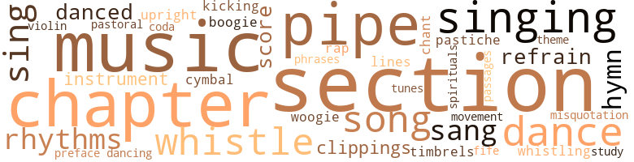
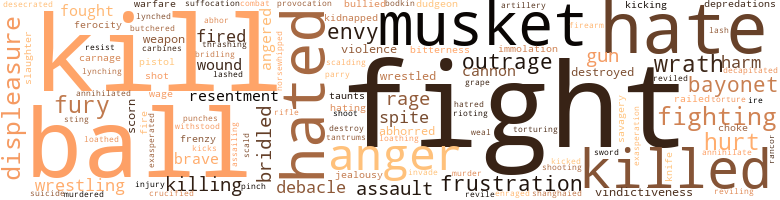

Chocolate Soldier, by Colter, Cyrus (1988)
122 music-related terms matched in this text.
Most frequent terms in this topic: section (15); music (12); chapter (9); dance (7); singing (7)
boogie.n.01
Definition: an instrumental version of the blues (especially for piano)
| word | sentence |
|---|---|
| boogie-woogie | Now as I swung her around once more , still badly out of step with the hot boogie-woogie rhythms of the band , my rapturous gaze collided head-on with Cager 's stunned , unbelieving stare . |
chant.n.01
Definition: a repetitive song in which as many syllables as necessary are assigned to a single tone
| word | sentence |
|---|---|
| chant | Promptly the gospel singing and clapping were taken up by the others , soon swelling into a shouting chant throughout the church . |
chapter.n.01
Definition: a subdivision of a written work; usually numbered and titled
| word | sentence |
|---|---|
| chapter | He only sat there now , weaving from side to side , salivating and mumbling , as the weak ceiling light bulb seemed casting the room in an eclipse , a sinister gloaming , before he opened the book again - to another random chapter , captioned : ' A Dissection of the Theory of the Prognathous Genus , Or a Vital Answer to the Vast Northern Hypocrisy . " |
| chapters | Soon , in his agitation , he found himself frantically jumping back and forth among the various chapters of the book though by now he knew them all almost by heart . |
| chapter | When he finally leafed forward to chapter 5 he felt , all over again , the same seismic shock as before . |
| chapter | The chapter was titled " God 's Own Charity to All . " |
| chapter | It was as if the fiendish Ofield was in this way mightily striving to make what can only be called , as hereinafter a chapter in this book is titled , ' A Higher Point . ' " |
| chapter | Again now he riffles through the book 's sparse pages , at last stopping where he begins anew the short , baffling chapter which invariably engages him , grapples with him , sending up his temperature , and finally clutching at him , as if by the lapels , to shout its elusive message yet like some abstract but terrifying principle hovering just an eyelash beyond the reach of his comprehension . |
| chapter | There it was - the chapter 's still-enigmatic caption : " A Higher Point . " |
| chapter | He realized he was reacting as if reading the chapter for the first , instead of fourteenth , time . |
| chapter | Although she did n't grasp it either , she did feel something , because of the very title she gave the chapter : ' A Higher Point . ' |
| chapter | He smiled down at the old man , then out at the audience , saying loudly , " I believe we have here today a chapter in that history I have been describing , but history personified , in the flesh , thus more real than anything I could ever portray to you by mere words ! |
clipping.n.01
Definition: an excerpt cut from a newspaper or magazine
| word | sentence |
|---|---|
| clippings | He first found inside the usual early Dabney family photographs and snapshots , now musty and faded , numerous party and wedding announcements , a few pressed flowers , brown and dried , pinned to the pages , and a variety of yellowed newspaper clippings . |
| clippings | Even the football clippings , the year when he was all-state end and caught all those passes . |
cymbal.n.01
Definition: a percussion instrument consisting of a concave brass disk; makes a loud crashing sound when hit with a drumstick or when two are struck together
| word | sentence |
|---|---|
| cymbal | At last now came a long , loud drum roll , followed by a crashing cymbal - to get order in the house . |
dance.n.01
Definition: an artistic form of nonverbal communication
| word | sentence |
|---|---|
| dance | I uneasily thanked Flo for the dance , though really still feeling hurt , stupid , and more confused , and finally , as she looked much relieved , started back to Cager 's table to face what I was sure would be his explosive ire . |
| dance | She raised both hands and , snapping her fingers , did a raunchy little dance . |
| dance | In attempting to give her little dance again she reeled and almost stumbled . |
dance.v.03
Definition: skip, leap, or move up and down or sideways
| word | sentence |
|---|---|
| dance | When ten minutes later , then , the terrific music had resumed and undecipherable , unreadable Cager , Mabel , and the others were again leaving the table to dance , Newt Gaines , a most considerate fellow , asked me if I wanted to dance with Grier Johnson , the girl he had brought . |
| dance | When ten minutes later , then , the terrific music had resumed and undecipherable , unreadable Cager , Mabel , and the others were again leaving the table to dance , Newt Gaines , a most considerate fellow , asked me if I wanted to dance with Grier Johnson , the girl he had brought . |
| danced | Spluttering a spate of hurried , nervous nonsense , though thanking him , I of course declined , whereupon Jackson Dawson danced with her , while Newt and I remained at the table - I now in a perfect tizzy of indecision and confusion . |
| dance | But by now the music had become so hot and groovy , the sharp rhythms overpowering , the dancing so frantic , that , ignoring the flip question , I blurted out : " Flo , Flo , will you let me dance with you - just once ? " |
| danced | I had not danced more than a half-dozen times in my whole life . |
| dance | I had gotten carried away on a streak of temporary derangement - or maybe moon madness - in even asking her to dance . |
| dancing | So you can have this old world - I keep tellin ' you - just give me Jesus : " Bearcat then began prancing and dancing again as a tidal wave of new singing broke out , sweeping the church . |
fife.n.01
Definition: a small high-pitched flute similar to a piccolo; has a shrill tone and is used chiefly to accompany drums in a marching band
| word | sentence |
|---|---|
| fife | But Rollo 's finally settling into the routine now , I think , and for much of that we have Haley Barnes and his fife to thank . |
finale.n.01
Definition: the closing section of a musical composition
| word | sentence |
|---|---|
| coda | Despite this seriatim epilogue , or coda , if you will , what transpired immediately following what has just been related may be of doubtful interest , or even value - indeed ( except maybe for one or two unpleasant details ) anticlimactic - to the reader , especially since he/she already knows the hero 's and his victim 's fate . |
foreword.n.01
Definition: a short introductory essay preceding the text of a book
| word | sentence |
|---|---|
| preface | But opening it , he saw at once , to his astonishment , the name of the august personage who had written its preface - none other than one Mary Eliza Fitzhugh Dabney . |
hymn.n.01
Definition: a song of praise (to God or to a saint or to a nation)
| word | sentence |
|---|---|
| hymn | He was still preaching when next someone , hands clapping , started up a jaunty hymn : I want to be ready , I want to be ready , To walk in Jerusalem Just like John ! |
| hymn | Following Bearcat 's lurid , strident Book of Revelation 's blast and warning , then his loud misquotation from First Thessalo-nians , another hymn refrain was taken up by all : " The Storm Is Passing Over , Hallelujah ! " |
| hymn | Indeed , certain of their slaves were sometimes chosen to be taken with them to church on Sunday and sent up into the loft at the rear of the church to hear the sermon and , actually , join in the hymn singing . |
kick.v.04
Definition: kick a leg up
| word | sentence |
|---|---|
| kicking | Well , sure enough , no sooner had they got to Davis and Main when the cops took out after them , cussing , kicking , swinging their nightsticks like crazy , and arrested the whole bunch , Cage getting the first bloodied head . |
medley.n.01
Definition: a musical composition consisting of a series of songs or other musical pieces from various sources
| word | sentence |
|---|---|
| pastiche | It does , though , unfortunately , often produce page after page rife with ellipses , plus a pastiche or potpourri of ever-escalating incidents , piled one on top of another , all now and then punctuated , I hate to tell you , by my sad , guilt-ridden , rhetorical outbursts on far , far too many pages of this mangled score , ending finally in the inevitable elisions and erasures betokening my total rout . |
misquotation.n.01
Definition: an incorrect quotation
| word | sentence |
|---|---|
| misquotation | Following Bearcat 's lurid , strident Book of Revelation 's blast and warning , then his loud misquotation from First Thessalo-nians , another hymn refrain was taken up by all : " The Storm Is Passing Over , Hallelujah ! " |
movement.n.05
Definition: a major self-contained part of a symphony or sonata
| word | sentence |
|---|---|
| movement | Finally he was about to ring again , when we heard a slight movement just inside the door . |
music.n.01
Definition: an artistic form of auditory communication incorporating instrumental or vocal tones in a structured and continuous manner
| word | sentence |
|---|---|
| music | Cager drank no alcoholic beverages of any kind , not even our cheap dormitory wine , so he sat with a Coke in his hand as Spats talked about Jimmie Spinks 's band which provided the hot jazz music in the cabaret section for dancing and the floor shows . |
| music | " You'all relax , then , and enjoy yourselves while we bring you some music and our show tonight . |
| music | " One , two , three , " he said , his foot stomping the beat as the music broke sharp , punctuated , frantic . |
| music | I was in heaven , wildly patting both feet and pounding my hands together in time with the music 's beat , as Cager , gleefully pointing to me , again went into his riotous laughing . |
| music | But when the music stopped and the floor show began , I noticed his sudden abstraction , his eyes elsewhere , observing a ringside table up front full of Sonny 's fans and friends , people who seemed not only enthusiastic well-wishers but a rabid claque who had often stood up to interrupt his solos with boisterous cries and applause . |
| music | If , then , or so I reckoned , I had any chance at all , I must bide my time - until , on resumption of the music , Sonny had returned to the bandstand . |
| music | When ten minutes later , then , the terrific music had resumed and undecipherable , unreadable Cager , Mabel , and the others were again leaving the table to dance , Newt Gaines , a most considerate fellow , asked me if I wanted to dance with Grier Johnson , the girl he had brought . |
| music | " The music 's really great , is n't it ? " |
| music | But by now the music had become so hot and groovy , the sharp rhythms overpowering , the dancing so frantic , that , ignoring the flip question , I blurted out : " Flo , Flo , will you let me dance with you - just once ? " |
| music | Occasionally our thighs would bang against each other , or my knee for a split second would enter between her legs , as I wrestled and manhandled her about , all to Jimmie Spinks 's loud , driving , reckless music . |
| music | So now here at Gladstone it is all you , Flo , only you , who limns my carnal obsessions even if my satyr 's lust for you is somehow coupled with an admittedly schoolboyish idolatry hardly justified by your caustic treatment of me on that never-to-be-forgotten night in Ma 's place of the music riots - this even conceding that your displeasure had ample cause . |
| music | Now we 've got to face the music . " |
musical_instrument.n.01
Definition: any of various devices or contrivances that can be used to produce musical tones or sounds
| word | sentence |
|---|---|
| instrument | " Do you play an instrument of any kind ? " |
| instrument | Then , as if from the depths of the muddy Darling , comes Ofield 's sepulchral voice , delivering , repeating , the charge - even naming her , as well as the specific means , the dire instrument , of dispatch ! |
passage.n.06
Definition: a short section of a musical composition
| word | sentence |
|---|---|
| passages | And , listen to this , even passages from Shakespeare . |
pastorale.n.01
Definition: a musical composition that evokes rural life
| word | sentence |
|---|---|
| pastoral | His dapper black suit , the pearl stickpin in his tie , the high sheen on his Florsheim shoes , the Lay - 'em - Straight on his hair , his conspicuous masonic ( diamond ) ring , to say nothing of the gleaming Oldsmobile parked out behind the church , all attested to his stellar pastoral ( fiscal ) accomplishments with the church - likewise with a goodly number of its female parishioners . |
phrase.n.02
Definition: a short musical passage
| word | sentence |
|---|---|
| phrases | He then went forward in the book again , finding a plethora of pages where the said " Mary Eliza " had heavily underscored certain words , phrases , sentences , even , twice , whole paragraphs , together with frequent lengthy annotations and emendations , indeed one in her audacious hand across the top of the page and down the vertical margin , this time in red ink : " This passage , " she writes , " clearly shows that in the importation of the African to our shores our colonial , and later , forebears , out of sheer material peed , committed a most fundamental and horrible sin against us , their heirs and posterity - indeed betrayed us ! |
pipe.n.04
Definition: a tubular wind instrument
| word | sentence |
|---|---|
| pipes | What pipes and timbrels ? |
| pipe | The crone then drew on her clay pipe and laughed , " Did you chirren hear that ? |
| pipe | Haley was patting himself for his pipe but had left it upstairs . |
| pipe | Then he started futilely patting himself for his pipe again . |
| pipe | He scooted to the forward edge of his chair , again patting his pockets for his pipe . |
| pipe | Now he yelled upstairs : " Rox , throw my pipe down here ! " |
| pipe | Haley was furiously loading his pipe . |
| pipe | Haley 's pipe angrily erupted in sparks . |
rap.n.05
Definition: genre of African-American music of the 1980s and 1990s in which rhyming lyrics are chanted to a musical accompaniment; several forms of rap have emerged
| word | sentence |
|---|---|
| rap | " Okay , now , " cried Spinks , " to get things started , the Royal Sounds will rap out a little number that 's got that hard bop beat you'all like so ! |
refrain.n.01
Definition: the part of a song where a soloist is joined by a group of singers
| word | sentence |
|---|---|
| refrain | Following Bearcat 's lurid , strident Book of Revelation 's blast and warning , then his loud misquotation from First Thessalo-nians , another hymn refrain was taken up by all : " The Storm Is Passing Over , Hallelujah ! " |
| refrain | Ah , my Gussie - it 's the same old refrain . |
rhythm.n.04
Definition: the arrangement of spoken words alternating stressed and unstressed elements
| word | sentence |
|---|---|
| rhythms | The delighted crowd 's hand-clapping with the hard-driving rhythms soon seemed ringing the very ceiling beams . |
| rhythms | But by now the music had become so hot and groovy , the sharp rhythms overpowering , the dancing so frantic , that , ignoring the flip question , I blurted out : " Flo , Flo , will you let me dance with you - just once ? " |
| rhythms | I was appalled now to realize what a disaster I was sure to be in the throes of all those dynamic and complicated rhythms Jimmie Spinks and his colleagues were sending off that bandstand . |
| rhythms | Now as I swung her around once more , still badly out of step with the hot boogie-woogie rhythms of the band , my rapturous gaze collided head-on with Cager 's stunned , unbelieving stare . |
score.n.02
Definition: a written form of a musical composition; parts for different instruments appear on separate staves on large pages
| word | sentence |
|---|---|
| score | It does , though , unfortunately , often produce page after page rife with ellipses , plus a pastiche or potpourri of ever-escalating incidents , piled one on top of another , all now and then punctuated , I hate to tell you , by my sad , guilt-ridden , rhetorical outbursts on far , far too many pages of this mangled score , ending finally in the inevitable elisions and erasures betokening my total rout . |
| score | There ever remained , then , that strain of vindictiveness , perversely commingled with love , I felt for her , my craving to even the score , actually punish her , that I would not be able to control . |
section.n.01
Definition: a self-contained part of a larger composition (written or musical)
| word | sentence |
|---|---|
| section | We though were on our way across town to the Negro section to check out any daytime action in Ma Moody 's place , the classy pub/dive by day and jumping Jehoshaphat cabaret by night . |
| section | And the first thing we saw as we alighted from the bus in the Negro section of Valhalla was a commotion . |
| section | I still easily reconstruct my career back Down East - a section of the country , naturally , I love - with its sedate environment , bright students , its classy , secure denizens . |
| section | When we reached the Negro section , then , he began whistling and when we finally arrived in front of the little frame house Flo rented , he was merrily - though , I realize now , nervously - humming . |
| section | There were nine of us - five boys , four girls , including Mabel Foster , Cager 's campus girlfriend - and , not uncommonly , we had to stand most of the way as our Jim Crow section of the bus was full to overflowing . |
| section | Cager , as he waited for us to arrive , sat talking with Spats in the bar lounge adjacent to the restaurant section , both of which were already crowded even though activities in the larger cabaret annex were yet to begin . |
| section | Cager drank no alcoholic beverages of any kind , not even our cheap dormitory wine , so he sat with a Coke in his hand as Spats talked about Jimmie Spinks 's band which provided the hot jazz music in the cabaret section for dancing and the floor shows . |
| section | We came on the bus and had to stand up most of the way - with the white section only half full . " |
| section | He seems a child at all but some freak fascist midget out of a circus until the rosy , cherubic face was observed , paying their fares , his mother , a tall , pale woman with brought him over halfway back into the white section they sat down . |
| section | Suddenly the mother , realizing what happened , that she and her son had just been gerrymandered COLORED section , blanched , even paler , then opened her gaping with shock and incredulity , yet somehow could not but , though , after frantically darting her eyes up front but where apparently no one had yet noticed , she turned on Cager , under her breath spluttering a string of racial as her son again trained his ghost gun on Cager and , down the barrel , repeatedly squeezed the trigger - " Bang ! |
| section | They were coming into the Negro section now . |
| section | That 's the job of our intelligence section . |
| section | The Dabney address was No. 924 Beauregard Street , in the oldest and most aristocratic part of town - a section neither of us had ever seen . |
| section | In the last six years Chicago has organized - throughout the Negro section - and the bigots are on the run ! |
| section | Bernice and Rollo , he still stunned and preoccupied by events of the past hour , their attendance to hear Boggs all but obligatory , sat listening back in the roped-off colored section , far in the rear of the tent . |
sing.v.02
Definition: produce tones with the voice
| word | sentence |
|---|---|
| Sing | Sing me the blues , sweetheart ! " |
| sang | " Praise His name ! " somebody else sang out , echoing the prior exultation . |
| sang | " Down at the cross where my Savior died ! " sang a tiny but pregnant woman in a high , shrill tremolo , only soon to be drowned out by an avalanche of cries of " Amen ! " for Bearcat , incited by the now standing platform prelates . |
| sing | - sing and his plastic pigs squeal , and his horses get stole and messed with , and all that kinda crazy stuff . |
| sing | " Maybe you sing , then . |
| sing | " Among my fondest memories , as a child and young lady back in Virginia , are those of listening , especially at Christmastime , to our servants sing . |
| sing | They would all assemble before us in the parlor and , after unwrapping their presents , sing spirituals for us in gratitude . |
| sang | Oh , how beautifully they sang ! |
| sang | All the way up the Shenandoah they sang ' Maryland , My Maryland ' as they marched , until on June seventeenth they had crossed the Potomac , and by the twenty-third were already approaching Chambersburg , Pennsylvania ! " |
singing.n.01
Definition: the act of singing vocal music
| word | sentence |
|---|---|
| singing | This always filled them with awe , especially when she followed it up by singing one of her old Judgment Day Songs : Oh , see the little black train a-comin ' , I know it 's goin ' to slack ; You can tell it by its slow rumblin ' , Besides , it 's all draped in black . |
| singing | Rollo asked his father what Granny meant by all this queer talk and singing , but Amos Lee , limp in his chair before supper , bone-weary from his long day in the fields , only went on nodding until he had fallen asleep as the boy talked . |
| singing | One Sunday morning he became so aroused by the visiting preacher 's loud sermon , the praying , moaning , humming , and singing , that he jumped up and began outshouting everybody - no mean feat , for Rollo 's Granny , although a tiny woman , was herself a great shouter , and huge Emmy Beecher , a childless widow , was known far and wide for the uproar , fistswinging , and violence of her own shouting . |
| singing | But now the little gathering had begun singing - " Down at the cross where my Savior died " - and slowly , though with a great inner fervor , clapping their hands and lifting their eyes heavenward , all as the six men up front cuddled their hissing snakes to their breasts , one soon cradling his in his arm and plopping down in the grass with it . |
| Singing | Singing broke out afresh now , powerful , plangent , keening , soon engulfing the entire congregation . |
| singing | Cager , deeply moved by the mighty singing , yet sat watching the preacher with a puzzled , and soon somewhat displeased , look on his face - still , however , expectant , hopeful . |
| singing | So you can have this old world - I keep tellin ' you - just give me Jesus : " Bearcat then began prancing and dancing again as a tidal wave of new singing broke out , sweeping the church . |
| singing | Indeed , certain of their slaves were sometimes chosen to be taken with them to church on Sunday and sent up into the loft at the rear of the church to hear the sermon and , actually , join in the hymn singing . |
song.n.01
Definition: a short musical composition with words
| word | sentence |
|---|---|
| song | Maybe what I felt smacked of what they call , in one of my Gladstone religious textbooks , a divination - whatever that is - or , in a way , like the song " Lo , Hear the Gentle Lark " that I first remember from down in Texas . |
| song | - burst forth in the song of the lark . |
| songs | A font of " old-timey " myths and lore , she was full of odd songs and sayings as well . |
| Songs | This always filled them with awe , especially when she followed it up by singing one of her old Judgment Day Songs : Oh , see the little black train a-comin ' , I know it 's goin ' to slack ; You can tell it by its slow rumblin ' , Besides , it 's all draped in black . |
| song | In a recent letter to him , nonetheless , she had been , in her own quaint way , somewhat more direct - by quoting lines from the old gospel song : Not my brother , not my sister But it 's me , Oh , Lord , Standing in the need of prayer . |
| song | Sho , singin ' ' Maryland , My Maryland , ' but many a song of the Old Dominion , too ! |
spiritual.n.01
Definition: a kind of religious song originated by Blacks in the southern United States
| word | sentence |
|---|---|
| spirituals | They would all assemble before us in the parlor and , after unwrapping their presents , sing spirituals for us in gratitude . |
study.n.10
Definition: a composition intended to develop one aspect of the performer's technique
| word | sentence |
|---|---|
| study | After a case study or two , by way of exemplification of the principle , I might then have recited ( it is hoped as well as Billups school 's little Ophelia , who wrought a sheer magic she 'll never know - almost got Gladstone a huge , fine , new liberal arts building ! ) |
theme.n.03
Definition: (music) melodic subject of a musical composition
| word | sentence |
|---|---|
| theme | At once resourceful Bearcat , walking , talking , declaiming , seized on this theme as if it were a brand-new text . |
timbrel.n.01
Definition: small hand drum similar to a tambourine; formerly carried by itinerant jugglers
| word | sentence |
|---|---|
| timbrels | What pipes and timbrels ? |
tune.n.01
Definition: a succession of notes forming a distinctive sequence
| word | sentence |
|---|---|
| lines | In a recent letter to him , nonetheless , she had been , in her own quaint way , somewhat more direct - by quoting lines from the old gospel song : Not my brother , not my sister But it 's me , Oh , Lord , Standing in the need of prayer . |
| tunes | Despite the heat the fairground teemed with people roving among the sideshows , exhibitions , and concessions and listening to the shrill , bagpipelike tunes from the calliope and the shouts of sunburned hawkers . |
upright.n.02
Definition: a piano with a vertical sounding board
| word | sentence |
|---|---|
| upright | He woke up and sat bolt upright in his bed . |
violin.n.01
Definition: bowed stringed instrument that is the highest member of the violin family; this instrument has four strings and a hollow body and an unfretted fingerboard and is played with a bow
| word | sentence |
|---|---|
| violin | My great-grandfather taught Thomas Jefferson to play Mozart on the violin . |
whistle.n.01
Definition: the sound made by something moving rapidly or by steam coming out of a small aperture
| word | sentence |
|---|---|
| whistles | Riotous applause and whistles - a din . |
whistle.v.01
Definition: make whistling sounds
| word | sentence |
|---|---|
| whistling | When we reached the Negro section , then , he began whistling and when we finally arrived in front of the little frame house Flo rented , he was merrily - though , I realize now , nervously - humming . |
| whistle | This old train is like a phaeton , It has no whistle , no bell , And if you find your station You 're either in heaven or hell . |
| whistle | It was not clamorous , there were no shouts , no cheering , only one steady buzzing hubbub - until , that is , he heard the train 's whistle . |
| whistle | He strongly suspected then the human noise was coming from the vicinity of the railroad station , though the second whistle sounded not so much like a whistle as a throttled exhalation , yet strenuous and dogged , accompanying the shuttling of boxcars or passenger cars - perhaps some engine backing or switching coaches into a station siding . |
| whistle | He strongly suspected then the human noise was coming from the vicinity of the railroad station , though the second whistle sounded not so much like a whistle as a throttled exhalation , yet strenuous and dogged , accompanying the shuttling of boxcars or passenger cars - perhaps some engine backing or switching coaches into a station siding . |
| whistle | Although the train was not yet in sight , he heard its shrill whistle blow for the Terrence Street crossing and knew that , momentarily , it would be rounding Culpeper Street bend and heading into the station . |
353 violence-related terms matched in this text.
Most frequent terms in this topic: fight (19); kill (15); ball (12); hated (11); hate (11)
abhor.v.01
Definition: find repugnant
| word | sentence |
|---|---|
| abhorred | Could it rather have been - I abhorred the thought - that she was otherwise preoccupied ? |
| abhor | I abhor the very possibility . |
| abhorred | He liked and respected , almost loved , Shorty and abhorred the thought of losing his friendship by treating him unjustly or speaking rashly any more than he already had . |
| loathed | Hence loathed Melancholy Of Cerberus and blackest midnight born , etc . |
| abhorred | As you intimate you do , he simply abhorred it - even if he did know there were times when it could n't be avoided . |
abhorrence.n.01
Definition: hate coupled with disgust
| word | sentence |
|---|---|
| loathing | With not ten seconds to spare , I made it to the toilet in my room , just barely , and sitting there , my trousers down around my ankles as I moaned and groaned , I could not help observing myself in the full-length mirror on the inside of the bathroom door - just as a tidal wave of self-revulsion inundated me , making me shudder in loathing . |
aggravation.n.01
Definition: an exasperated feeling of annoyance
| word | sentence |
|---|---|
| exasperation | " Yes , yes ! " she cried in a keening , outraged exasperation . |
aggravation.n.02
Definition: unfriendly behavior that causes anger or resentment
| word | sentence |
|---|---|
| provocation | Besides the pastor , there were six or seven other , lesser , divines seated up behind him on the rostrum , all handpicked by Bearcat for their long fealty to him and their eagerness at the slightest provocation to jump up as he preached and loudly egg him on , men clad in the shiny blue serge suits and white bow ties of ( except Sundays ) a gnarled-handed , hod-carrying clergy . |
anger.n.01
Definition: a strong emotion; a feeling that is oriented toward some real or supposed grievance
| word | sentence |
|---|---|
| anger | Afterward he goes to Yolande 's room and talks to her , tells her she must be more careful , not go out alone like that anymore , stay closer to the house ; that she is his baby sister whom he loves and expects great things of , that what almost happened to her was bad , very bad , certainly nothing for her to be smiling about , but something for her fear , anger , her utter contempt . |
| ire | I uneasily thanked Flo for the dance , though really still feeling hurt , stupid , and more confused , and finally , as she looked much relieved , started back to Cager 's table to face what I was sure would be his explosive ire . |
| anger | Whatever anger he may have felt before seemed somehow now to have vanished , supplanted , however , by a deeply serious and conscientious curiosity . |
| anger | His anger flared . |
| anger | But my smiling smugness would make her flame with anger , whereupon she would berate me with even greater , more savage , bitterness . |
| anger | It was somehow all I could do to suppress my unaccountable anger . |
| anger | But as the anger , then outrage , hit , it flushed an engorged ruby red , almost purple . |
| anger | The anger , the bitter hurt , and then the fury , like the delayed fuse of a time bomb , would come only later . |
| anger | Nothing , though , had ever filled him with such scalding anger yet exaltation - but then always utter bafflement . |
| anger | He hated this book with a vengeance despite its unwitting portrayal of Ofield Smalls as hero and knew his anger , his spleen , was directed entirely against its author . |
anger.v.02
Definition: become angry
| word | sentence |
|---|---|
| angered | Although he understood none of it he was angered by the whispers . |
| angered | Nevertheless , it furiously angered me , almost as much as would have the other possibility , that is , of " past dark things " ; and most certainly when she added ( again truthfully ) that , besides , I seemed all along to have acquired more and more of this gigantic chip on my shoulder . |
| angered | There to perform the old folks ' ritual of immersion in the ' blood of the lamb ' of any objects thought to have displeased , aroused , or angered the already evil spirits . |
attack.v.01
Definition: launch an attack or assault on; begin hostilities or start warfare with
| word | sentence |
|---|---|
| assailing | Therein , though , lay the Aeschylean tragedy , in the thwarting confusion now assailing him , the frustration , mental torture , together , inevitably , with all that these ruinous factors symbolized , namely , the ironical self-image of the great fearless young black war leader , reincarnation of Clausewitz , plus that of the new ( black ) Archangel Michael , savior of his fellow blacks , all rolled into one composite and mighty hero - and he then possessed of a two-inch penis ! |
bayonet.n.01
Definition: a knife that can be fixed to the end of a rifle and used as a weapon
| word | sentence |
|---|---|
| bayonet | Then we saw mounted on the left wall , extending under the tremendous span of at least four portraits , and flanked by two dramatic clusters of scarlet battle flags , an enormously long Confederate Enfield musket , its gleaming bayonet , which seemed at least half as long as the musket itself , fiercely affixed . |
| bayonet | Next he pointed to the adjacent portrait which hung directly above the long , gleaming bayonet fiercely affixed to the interminably long Enfield musket . |
| bayonet | Only by cannon , by musket ball - yes , by the bayonet 's cold steel - were we ever to regain our honor ! " |
| bayonet | It is , yes , a tableau , a crucifixion , as he , his lungs near to bursting now , lets fall , abandons , the heavy Enfield musket butt , which plummets to the carpet , but whose affixed cold steel bayonet still remains through the chair and its occupant just as it was . |
| bayonets | Continued Boggs now in his greatest height of passion : " As the ranks of the Confederates , muskets high , fixed bayonets gleaming in the broiling sun , scarlet battle flags flying , moved out , then up the slope of the ridge , young Pickett , still ever the dandy , dressed to the nines , his long ringlets of dark hair scented and pomaded , his bejeweled sword brandished high overhead , led the assault , turning and crying out to his men , ' Do n't forget today that you are from old Virginia ! |
| bayonet | There the wild redneck special county prosecutor , one Barney Renfroe , in a yelling , raging , apoplectic performance , had kept brandishing before the jury the murder weapon ( ironically , an aged relic of another war - " between the states " - a memento owned and cherished by the Old South unreconstructed [ except for her final weeks ] victim herself ) , this enormously long Confederate Enfield musket , its fixed bayonet ( it had done the grisly work ; no shot was fired ) almost as long , and he , Renfroe , screaming to the jury about the old doyenne 's pitiful blood , " her blood , blood , blood ! " |
blister.v.02
Definition: subject to harsh criticism
| word | sentence |
|---|---|
| scalding | Roxanne was scalding a platter . |
bridle.v.01
Definition: anger or take offense
| word | sentence |
|---|---|
| bridled | Lisbeth bridled . |
| bridled | Hortense bridled . |
| bridling | I said , bridling . |
| bridled | She bridled and reddened . |
| bridled | Dabney bridled . |
| bridled | I bridled . |
butcher.v.01
Definition: kill (animals) usually for food consumption
| word | sentence |
|---|---|
| butchered | Three shoats will be butchered after being felled each by one rifle shot between the eyes ; no knife slitting , no squealing , no rivulets of hot blood , just a spasmodic , twitching , plumping to the ground ; Sam the expert . |
cannon.n.04
Definition: heavy automatic gun fired from an airplane
| word | sentence |
|---|---|
| cannon | But it was in search of Colonel Gascar commanding the scant eight cannon available to Toussaint 's forces , artillery the general wanted and needed brought forward immediately . |
| cannon | Soon the eight cannon had been advanced into their new positions and were firing heavy salvos into the ranks of the regrouping French . |
| cannon | Only by cannon , by musket ball - yes , by the bayonet 's cold steel - were we ever to regain our honor ! " |
carbine.n.01
Definition: light automatic rifle
| word | sentence |
|---|---|
| carbines | Strange , strange , he thought , these cool , taciturn , self-possessed men , especially when , even more puzzled now , he saw they were under heavy guard - by helmeted American soldiers , white , in their drab brown uniforms and carrying their carbines at the ready . |
contemn.v.01
Definition: look down on with disdain
| word | sentence |
|---|---|
| scorn | Cager , grinding his teeth , now curled his lip in scorn . |
| scorn | Did n't he say at Fredericksburg " - Haley curled his lip in scorn - " after that great battle - I 'm sure you , as such a devoted student and partisan of the Confederacy , know all about this - did n't he say , that day after his bloody victory over inept Burnside , that ' It is well that war is so terrible , or we would grow too fond of it . ' |
| scorn | The bearded old man in the second row had been watching the orator with piercing eyes of displeasure , almost scorn , and finally now outright rage . |
craze.n.02
Definition: state of violent mental agitation
| word | sentence |
|---|---|
| frenzy | That , as a result , I was less than always in possession of myself , or my saner faculties , was , in fact , in a perpetual frenzy , and so forth . |
| frenzy | Once more I detailed , as if masochistic , or I else purging myself of something abhorrent , the seeming earth-quake , as it were , that in the end , as scruffy old Joshua , the Trojan horse vendor , had foretold , brought down the ancient courthouse , and the draft board with it , at Valhalla ( Valhalla , Tennessee , that I is ) , sending the town into even further bloody frenzy after the first , main , lynching . |
crucify.v.01
Definition: kill by nailing onto a cross
| word | sentence |
|---|---|
| crucified | You have commanded me , your unworthy servant , to preach hellfire and damnation , baptism by immersion , and Christ crucified , to Your peoples , Lord , so that they 'll be ready when their record is brought before You who 'll be judgin ' both the quick and the dead ! |
decapitate.v.01
Definition: cut the head of
| word | sentence |
|---|---|
| decapitated | Down in Virginia it was a scorching summer morning as Rollo , wielding a tough sapling stick , decapitated plants and flowers - morning glories , honeysuckle , hydrangeas , ferns - along the roadside as he walked , strolled , with the absentminded , playful-colt vigor , yet concentration , of any boy left to his own lonely devices for a time , though biding that time until , the journey over , he would find at his destination far more interesting things to do . |
defy.v.01
Definition: resist or confront with resistance
| word | sentence |
|---|---|
| withstood | At first , though - an ironic paradox - the structure 's northeast wing withstood , for all of twelve hours , the prior force of the detonation , still standing , a gaunt ghost , amidst the sprawling , smoking mass of detritus , sulfur dust , and rubble , its blasted-open cornerstone yielding up , inter alia , the hoary dedicatory oration of the year 1831 ( the same annum , mind you , of that other hero 's , Nat Turner 's , Virginia rebellion and martyr 's death ) . |
depredation.n.01
Definition: an act of plundering and pillaging and marauding
| word | sentence |
|---|---|
| depredations | The seed idea of his depredations did not come to him from dreams or visions . |
| depredations | " Just think of the millions over the cen - turies who 've suffered from his depredations . |
desecrate.v.01
Definition: violate the sacred character of a place or language
| word | sentence |
|---|---|
| desecrated | You desecrated Daddy ! " |
destroy.v.04
Definition: put (an animal) to death
| word | sentence |
|---|---|
| destroy | The pressure , if not soon vented , would destroy me . |
| destroyed | It was the two of them - in tandem - who finally destroyed me . |
| destroyed | They destroyed our way of life , completely and forever , and impoverished us till this day ! |
| destroyed | It must be destroyed ritualistically . |
displeasure.n.01
Definition: the feeling of being displeased or annoyed or dissatisfied with someone or something
| word | sentence |
|---|---|
| displeasure | He now raked his fingers through his hair ( which when he arrived had been dyed a rather demonic saffron but was now returning to its true salt-and-pepper cast ) , fidgeted in his chair , and watched me suspiciously - while I tried to flage my deep displeasure at his remarks , all of which , however ; had myself made possible by even , relatively , what little I had told him about my life and those who had figured in it . |
| displeasure | I said , sensing , actually , a minimum of displeasure toward me . |
| displeasure | So now here at Gladstone it is all you , Flo , only you , who limns my carnal obsessions even if my satyr 's lust for you is somehow coupled with an admittedly schoolboyish idolatry hardly justified by your caustic treatment of me on that never-to-be-forgotten night in Ma 's place of the music riots - this even conceding that your displeasure had ample cause . |
| displeasure | Instant displeasure showed on her face - at both the intrusion and the presumption . |
| displeasure | With a look of grave displeasure she turned to Cager , saying , " Someone wishes to speak to you on the telephone . |
| displeasure | But her hesitance , her indecision , appeared as though stemming from some deep , lurking displeasure , even envy ; also as if here in a most crucial , because symbolic , enterprise she , the savior and conscience , the moral doyenne , of the whole civilization , had been suddenly taken by surprise , outwitted , upstaged , by a mere interloper , or usurper - this " nigra " houseboy . |
| displeasure | Dabney cut her an eye of acute displeasure . |
| displeasure | The bearded old man in the second row had been watching the orator with piercing eyes of displeasure , almost scorn , and finally now outright rage . |
dudgeon.n.01
Definition: a feeling of intense indignation (now used only in the phrase `in high dudgeon')
| word | sentence |
|---|---|
| dudgeon | Instead I went up to Flo and Annette and , like an oily , unctuous undertaker , tried to speak to them as solicitously and comfortingly as , considering my true dudgeon , I could bring myself to do . |
| dudgeon | Instead she rose from the bed , put on a robe , and lit a cigarette , then went and sat in a chair near the window , as far away from me as the tiny bedroom would allow , yet staring stubbornly at me before going into a grim-lipped dudgeon . |
eliminate.v.03
Definition: kill in large numbers
| word | sentence |
|---|---|
| annihilated | " The finite , " Pascal wrote in the seventeenth century , " is annihilated in the presence of the infinite . |
| annihilate | Then , completely to annihilate , Ferguson , quaking , in extremis , snatched the blue ban-dana handkerchief from around the caretaker 's neck , stepped forward and , touching his hat out of respect to the deceased and this endowment , covered the snake . |
engage.v.07
Definition: carry on (wars, battles, or campaigns)
| word | sentence |
|---|---|
| wage | He showed the Krauts how to wage war , man . |
| wage | I 'm dealing with how my people can get the wherewithal , and the know-how - the power is what I 'm talking about - to wage our war , wage it to victory . |
enrage.v.01
Definition: put into a rage; make violently angry
| word | sentence |
|---|---|
| enraged | Face blanched whiter than white , pince-nez falling to her lap , eyes popping horror at the sight of the gleaming steel , she lurches up from the chair and tries hoarsely to speak , as if enraged at a demeaning Halloween trick . |
envy.n.01
Definition: a feeling of grudging admiration and desire to have something that is possessed by another
| word | sentence |
|---|---|
| envy | I can only be sure that there exists an almost storied green envy , no matter that I have suppressed it , that I still feel about hero Cager 's overly fulfilled , even if in the end tragic , selfhood . |
| envy | But soon , then , at an early stage his took off like the streaking meteor it was , leaving me , over this whole ensuing span of years , fairly rankling with an envy I have often , defensively , called " moral . " |
| envy | Yet he loved him with somehow a strange and powerful envy . |
| envy | But her hesitance , her indecision , appeared as though stemming from some deep , lurking displeasure , even envy ; also as if here in a most crucial , because symbolic , enterprise she , the savior and conscience , the moral doyenne , of the whole civilization , had been suddenly taken by surprise , outwitted , upstaged , by a mere interloper , or usurper - this " nigra " houseboy . |
| envy | The only thing they can do is rail against those of us who 're more gifted , mentally and morally , than they , not realizing that if it were n't for us , people who see their duty and go quietly about doing it - often at great sacrifice and the butt of envy , even hatred - that the whole fabric of civilized society would disintegrate and go under and they , the least gifted , would be by far the worst off , indeed first to perish . |
| envy | Of course , as I say , Carol , in this matter the cold literalist , insists it is a spurious dream , conjured up by all my wild demons of envy and despair , a nightmarish chaos fresh out of Ionesco ; that there took place no such scene on Jeff Davis Bridge . |
ferocity.n.01
Definition: the property of being wild or turbulent
| word | sentence |
|---|---|
| ferocity | He shook the toy now with a manic ferocity , before jiggling and joggling it against his ear to listen for any possible sound or commotion inside the great belly . |
| ferocity | I was so disturbed I suddenly realized my migraine had returned with such ferocity as possibly to be some kind of penalty or damnation . |
fight.n.02
Definition: the act of fighting; any contest or struggle
| word | sentence |
|---|---|
| fighting | He was anxious to deliver his message and return up front to the fighting . |
| fighting | " It 's because that 's where the action , the fighting , is , bless his heart , " she said . |
| fighting | My grandson is over there somewhere in the very thick of the fighting , while you , and those others out there at that ! |
| combat | - who not once ever flinched from the bloody test of combat ! |
fight.n.05
Definition: a boxing or wrestling match
| word | sentence |
|---|---|
| fight | Yet all the while of course they were raising big families , although the men also found time to carouse , and wench , and fight duels , the duels , however , signifying they were now regarded as gentry . " |
| fight | Dabney was now full of fight . |
| fight | You see , it was always Lee on the attack - carrying the fight to the Yankee enemy . |
fight.v.02
Definition: fight against or resist strongly
| word | sentence |
|---|---|
| fight | But it was Clausewitz that taught them how to fight , not Hitler . |
| fought | But why 's he pick out somebody like that of all people to identify with , that fought his ass off for four years to keep us in slavery ? |
| fight | " We fight for our dignity as men , as black men , and for the protection of our women and children on this island ! |
| fight | We also fight for our heritage , which is African ! |
| fight | I told you last week he cussed out a white plumber in the dorm , then wanted to fight him , for calling him ' boy . ' |
| fight | They made him actually want to fight those at school who engaged in them . |
| fight | Then he wanted to fight me , furiously charging I had betrayed him . |
| fighting | Directly from Shorty George 's , still fighting tears , he stormed out of the rain into Ma Moody 's place - talking to himself , also reviling himself as well as the whole world and all mankind in it . |
| fight | Why get mad at 'em , why bring in the NAACP , why try to fight 'em ? |
| fight | That 's why he just loves to fight ! |
| fighting | Finally then at climax , both of us fighting , keening , yowling , and at last in the gestalt of the moment , giving up the ghost , a great paroxysmal seizure would take her and she would shudder and shake , then try to throw me off her ( to no avail , of course ; I was n't going for that ) , all the while crying out in the bitterest tears of self-castigation : " Oh , why did I finally give in to you ! |
| fights | You 'd think , then , after I told him about himself that he 'd hate me , but in a way , although he fights it like hell , it 's only made him more than ever dependent on me . |
| fight | But even by the time , five weeks after she left , that I myself departed Coveycote , I had definitely decided on Berlin , Kansas , to which to relocate and fight my demons . |
| fight | Although he was too young to fight in the war against the North - in fact , he was only a baby - he nonetheless lost seventeen , I believe he said it was , cousins , uncles , brothers , and the like , to say nothing of those maimed . |
| fight | My grandson , who is your age , just arrived overseas , in Europe , to fight . |
| fight | But you would n't even be required to fight , for you 'd doubtlessly be sent to one of the service supply units - far behind the lines . |
| fight | We 'll fight our war , then . |
| fighting | You talk of raising a nigra army , fighting your own war , winning some kind of silly minstrel-show victory , I guess . |
| fight | To fight us , I guess . |
| fight | " So , in a nutshell , Rollo , you 've got to start rethinking , reshaping , your life , ridding yourself of all these bad influences you 've acquired , many at that school out there , absolutely fantastic notions about some nigra army to fight for ' your people , ' as you call them . |
| fighting | " Yassum , missus - no problem , " said Sampson , fighting the steering wheel and sweating his gin , whereupon , blatantly ignoring her instructions , he maneuvered around the now halted hearse and went to the other , lower , side of the grave , where here , though he then for some inexplicable reason , gin or not , suddenly slammed on the brakes , sending all in the car lurching violently forward in their seats , Dabney grabbing her flying pince-nez Augusta her prim little black hat , as the consumptive-looking caretaker jumped for his life out of Sampson 's wild advance . |
| fought | Augusta was trying to pull her away toward the car but Dabney fought her off . |
| fighting | But she was fighting tears now . |
| fight | I had neither the strength nor will , nor the inclination , to fight back . |
| fought | Our honor was at stake and we fought and died to uphold it ! " |
firearm.n.01
Definition: a portable gun
| word | sentence |
|---|---|
| firearm | But not before Cager had leaped to his feet , raised both arms high as if he too now held a powerful firearm , and aimed it straight at the departing pair . |
fit.n.01
Definition: a display of bad temper
| word | sentence |
|---|---|
| tantrums | I feared she would go into one of her tantrums . |
frustration.n.03
Definition: a feeling of annoyance at being hindered or criticized
| word | sentence |
|---|---|
| frustrations | Nor was Rollo , absorbed as he was in all his visions and strategies , in any way attuned to Amos 's own hard past , the father 's frustrations , blighted hopes , the years of ceaseless labor , all now taking their certain toll . |
| frustration | But now , just after dark , throwing off his dripping poncho as he entered Shorty George 's little restaurant , Cager , in frustration and disgust , had to explain to Shorty the actual , and highly unsatisfactory , situation . |
| frustrations | As he now sat waiting for his food , his frustrations and fatigue seemed to have settled painfully in his neck and shoulders , even down his spine , though he yet dreaded the thought of having to return to campus and all its ecology of blasted hopes where his string of comedies had now all but been played out and himself consigned to utter nadir . |
| frustration | My little mother , Maude , however , detecting my strange malaise , sought to relieve it by trying to talk me out of it , comfort me , telling me that in every boy 's life there came such times of frustration and confusion - the " jimmies , " she called them . |
| frustration | Therein , though , lay the Aeschylean tragedy , in the thwarting confusion now assailing him , the frustration , mental torture , together , inevitably , with all that these ruinous factors symbolized , namely , the ironical self-image of the great fearless young black war leader , reincarnation of Clausewitz , plus that of the new ( black ) Archangel Michael , savior of his fellow blacks , all rolled into one composite and mighty hero - and he then possessed of a two-inch penis ! |
| frustration | In his angry frustration Haley had half stood up , his eyes fairly popping . |
fury.n.01
Definition: a feeling of intense anger
| word | sentence |
|---|---|
| fury | I could readily feel his violent , suppressed fury . |
| rage | Yet , a few days later , in a fit of arbitrary rage , he knocked one of his tenants down with his fists for a trifling infraction amounting to nothing . |
| rage | Cager in his blind rage sat glaring and trembling . |
| fury | It was not until he had gotten almost two blocks away that , in his blind fury , he could speak at all - even to himself . |
| rage | But Haley and Roxanne were out at the time - at a faculty dinner gathering - and Cager , finally realizing after repeated knockings that no one was at home , became desperate and irrational , feeling somehow betrayed , before then flying into a rage on the front porch . |
| rage | She was now so filled up with her rage and sorrow that she began a loud wailing , actually caterwauling , that must have been heard out in the street . |
| fury | The anger , the bitter hurt , and then the fury , like the delayed fuse of a time bomb , would come only later . |
| fury | He was still numbed by her fury . |
| fury | Like a hapless , condemned prisoner in the dock , somehow containing , suppressing , his blind fury , remembering , too , his vows of forbearance , he stood silently before her - finally even nodding mute assent . |
| fury | She could return her eyes away from the truth in crinoline-abashed mod - esty - and purple fury - until her lips could and did form " You filthy , thieving crook , you , Ferguson ! " she screamed , " You scum of the earth ! " |
| fury | First , in the midst of the insane , unleashed local fury no black undertaker ( least of all Ferguson ) has the courage , or foolhardiness , to go get the " body . " |
| rage | The bearded old man in the second row had been watching the orator with piercing eyes of displeasure , almost scorn , and finally now outright rage . |
gag.v.06
Definition: cause to retch or choke
| word | sentence |
|---|---|
| choke | An acrid suffocation welled up in my throat that for a moment I thought would choke me . |
| choke | Then I wanted to choke myself - she might , I thought , clam up on me , tell me nothing . |
grapeshot.n.01
Definition: a cluster of small projectiles fired together from a cannon to produce a hail of shot
| word | sentence |
|---|---|
| grape | But later that afternoon they chase Yolande through Jacoby 's bare turnip patch , twice around the Barnes 's leaning fodder shed , past the grape arbor , and almost into her own house - the three panting white boys . |
gun.n.01
Definition: a weapon that discharges a missile at high velocity (especially from a metal tube or barrel)
| word | sentence |
|---|---|
| gun | Suddenly the mother , realizing what happened , that she and her son had just been gerrymandered COLORED section , blanched , even paler , then opened her gaping with shock and incredulity , yet somehow could not but , though , after frantically darting her eyes up front but where apparently no one had yet noticed , she turned on Cager , under her breath spluttering a string of racial as her son again trained his ghost gun on Cager and , down the barrel , repeatedly squeezed the trigger - " Bang ! |
| gun | If I had a gun Yd kill that mother-fucker ! " |
| guns | We had n't yet developed gunpowder - we had no guns , no canon ! " |
| guns | That 's why we did n't have guns or gunpowder . |
| gun | Shorty George and his quickly rerecruited , reassembled , former henchmen , still trained members all of the old defunct " drill unit , " night-dynamited the ancient courthouse ( on whose lawn the hero-deceased had laid the wreath at Lee 's ineffably serene statue ) , the structure collapsing as if it were the original Valhalla after Brunhilde 's and Grane 's immolation , sinking into the Rhine like a torpedoed superdreadnought , or as if it were a great megaton hippo , victim of some random poacher 's Sten gun , submerging , sounding , into the river Niger and oblivion , the old courthouse thus kaput , all as duly prophesied by the scruffy vendor and draft-board janitor Joshua . |
hate.n.01
Definition: the emotion of intense dislike; a feeling of dislike so strong that it demands action
| word | sentence |
|---|---|
| hatred | The only thing they can do is rail against those of us who 're more gifted , mentally and morally , than they , not realizing that if it were n't for us , people who see their duty and go quietly about doing it - often at great sacrifice and the butt of envy , even hatred - that the whole fabric of civilized society would disintegrate and go under and they , the least gifted , would be by far the worst off , indeed first to perish . |
| hate | You see your friend and sidekick , whom throughout you have dubbed ' Hero , ' as , in the midst of his feverish departure preparations , he finds that , think or do what he will , he can not rid himself of the specter of that little book whose ninety-two pages of hate , stupidity , retribution , death - but mystery still - has so gripped his life and sought to alter its course . |
| hate | The only individual I ever knew him to dislike - no , hate , and a scalding , purblind hate it was - was ( another preacher ! ) |
hate.v.01
Definition: dislike intensely; feel antipathy or aversion towards
| word | sentence |
|---|---|
| hate | It does , though , unfortunately , often produce page after page rife with ellipses , plus a pastiche or potpourri of ever-escalating incidents , piled one on top of another , all now and then punctuated , I hate to tell you , by my sad , guilt-ridden , rhetorical outbursts on far , far too many pages of this mangled score , ending finally in the inevitable elisions and erasures betokening my total rout . |
| hated | Although the Pressman doctors , especially since blood sometimes appeared in my stool , had given me every test imaginable , including a series of those hated barium enemas , they could find nothing , not even a provisional ulcer . |
| hate | I hate to call it integrity or courage , or compassion for those less fortunate , for you know what she thought of us - all of us . |
| hated | You hated that old white man and wanted to see him dead , or at least burnt bad . |
| hates | He hates the Carrs and all their works . |
| hated | It as quickly aroused him and immediately he hated himself for it . |
| hating | He sat gazing around him and hating the oppressive , cloyingly-sweet smell of the living room deodorant . |
| hated | Although the city buses were but one example , she hated them and all they told her about her career of chance-taking with color as stakes . |
| hated | It turned out that she had not only had to ride a hated Jim Crow bus back but had been told by the doctor it was uncertain how long Annette would have to remain in the hospital , that her left shoulder had been dislocated . |
| hated | The road he soon traveled went past the now desolate fields of Judge Timothy Carr , a power in this part of Virginia and a man hated by the upstart Nathan Blatchford whose father had been a dirt farmer with a shackful of pellagra-ridden children . |
| hated | I was so disgusted that I hated myself . |
| hate | You 'd think , then , after I told him about himself that he 'd hate me , but in a way , although he fights it like hell , it 's only made him more than ever dependent on me . |
| hate | Ca n't you see why I hate myself so ? " |
| hated | Carol hated me for making her go and thought I had done it deliberately , out of spite , to punish her for some fancied slight or other . |
| hate | " I 'll sure hate to see you leave , " I heard myself saying to him . |
| hated | I want to say for my father , though , that he was twice decorated for bravery - at Shiloh and before that at Ball 's Bluff - yet he hated war and finally ended up a pacifist . |
| hate | I hate to say it - when I think of Haley and all he 's done for me - but now it 's good-bye to ! |
| hate | He does all this , though , as if by instinct , so engrossed and chronically agitated has he become in these night-after-night sessions poring over the fateful little book he has , if ambivalently , come to hate more than the light bulb , as he mutters his epithets at what he regards as Cynthia Ambrose 's fatuous attempts at analyzing her protagonist 's mind and actions and , in the end , Ofield 's unfathomable yet titanic statement - whatever that was or seemed to be . |
| hate | You throw at me 'cause you want to kill me and all niggers - takin ' yoh hate out on me and that way gettin ' yoh kinky kicks ! |
| hate | You used to hate the place . |
| hated | He hated this book with a vengeance despite its unwitting portrayal of Ofield Smalls as hero and knew his anger , his spleen , was directed entirely against its author . |
| hated | Even the more he has hated it for what its author had meant for it to stand , the greater , nevertheless , has remained its hold on him - hating it because of Ambrose , loving it for Ofield . |
| hating | Even the more he has hated it for what its author had meant for it to stand , the greater , nevertheless , has remained its hold on him - hating it because of Ambrose , loving it for Ofield . |
horsewhip.v.01
Definition: whip with a whip intended for horses
| word | sentence |
|---|---|
| horsewhipped | Oh , you ought to be horsewhipped ! |
immolation.n.01
Definition: killing or offering as a sacrifice
| word | sentence |
|---|---|
| immolation | Shorty George and his quickly rerecruited , reassembled , former henchmen , still trained members all of the old defunct " drill unit , " night-dynamited the ancient courthouse ( on whose lawn the hero-deceased had laid the wreath at Lee 's ineffably serene statue ) , the structure collapsing as if it were the original Valhalla after Brunhilde 's and Grane 's immolation , sinking into the Rhine like a torpedoed superdreadnought , or as if it were a great megaton hippo , victim of some random poacher 's Sten gun , submerging , sounding , into the river Niger and oblivion , the old courthouse thus kaput , all as duly prophesied by the scruffy vendor and draft-board janitor Joshua . |
| immolation | I had not been inside one , as I now reckon it , throughout these three decades and more - not since Cager 's famous aborted Tennessee trial during the latter days of the war culminating in his gory , fiery immolation and martyrdom . |
indignation.n.01
Definition: a feeling of righteous anger
| word | sentence |
|---|---|
| outrage | The people were leaderless - it was an outrage ! |
| outrage | But as the anger , then outrage , hit , it flushed an engorged ruby red , almost purple . |
| outrage | In his incredulity and outrage he was about to slam the book hut , when on the flyleaf he saw what until now he had over-looked , the book 's gift inscription , in the ancient ink now mottled , brown , and faded : " To my beloved son , Nathan , from a loving and , is to be hoped , instructive father . " |
| outrage | ... " Haley threw up both hands in confused , flustered outrage . |
| outrage | He got sullen then and gave me the silent treatment , before his outrage would get the better of him when he could hardly contain himself much less be civil . |
| outrage | That it must somehow be made , devised . . . even , if necessary , improvised , so as , exactly , nicely , to fit the historic outrage ! |
infuriate.v.01
Definition: make furious
| word | sentence |
|---|---|
| exasperated | I was thoroughly exasperated with her - until , that is , I realized that what she had said , and the way , the grandiloquent fustian used , in which she had said it , again merely marked her as my own daughter who had heard , from childhood , far too many of my phony sermons . |
injury.n.01
Definition: any physical damage to the body caused by violence or accident or fracture etc.
| word | sentence |
|---|---|
| harm | That is how I see him even to this day - at once a fierce , prodigious , and internalized youth , who , though , had the capability of a direct overtness which could please , exasperate , rile , charm , excite pity , as well as the wish to protect and shield him , or , on less felicitous occasions , cause you to want to do him bodily harm , the latter , however , a most inadvisable , if not unthinkable , undertaking . |
| hurt | I uneasily thanked Flo for the dance , though really still feeling hurt , stupid , and more confused , and finally , as she looked much relieved , started back to Cager 's table to face what I was sure would be his explosive ire . |
| harm | Sure do n't do no harm . " |
| hurt | " You can see my little girl 's hurt and I ca n't leave to get help ! |
| hurt | I said , feigning hurt and resentment . |
| harm | " You may , though , " I said , " be overestimating the harm done him . |
| hurt | The anger , the bitter hurt , and then the fury , like the delayed fuse of a time bomb , would come only later . |
| injury | Soon the excited spectators were loudly conferring among themselves , speculating on the extent of the injury , waiting for some word . |
| harm | You could do more harm than good . |
invade.v.01
Definition: march aggressively into another's territory by military force for the purposes of conquest and occupation
| word | sentence |
|---|---|
| invade | He must invade the North ! " |
jealousy.n.01
Definition: a feeling of jealous envy (especially of a rival)
| word | sentence |
|---|---|
| jealousy | The sun 's high artwork , mottling and deli - cate , suffused the expansive crew-cut lawns , their pirouetting sprinklers , the manicured hedges , plus other profusions of fresh bright foliage , all trappings of these comely Caucasian environs which gave us both distinct feelings of jealousy and alienation . |
| jealousy | Right or wrong , I still attributed his heated suspicion to a sexual jealousy , of , moreover , the unhealthiest , ex post facto kind . |
kick.v.04
Definition: kick a leg up
| word | sentence |
|---|---|
| kicking | Well , sure enough , no sooner had they got to Davis and Main when the cops took out after them , cussing , kicking , swinging their nightsticks like crazy , and arrested the whole bunch , Cage getting the first bloodied head . |
kick_back.v.02
Definition: spring back, as from a forceful thrust
| word | sentence |
|---|---|
| kicked | But meantime he 'd been kicked out of school . |
| kicks | She added , " You never think about anything or anybody but yourself , your own pleasures - your kicks . |
| kicking | " Off our backs , there 's nothing here for us to be kicking up our heels about . " |
kidnap.v.01
Definition: take away to an undisclosed location against their will and usually in order to extract a ransom
| word | sentence |
|---|---|
| kidnapped | You kidnapped me , white folks , and put me on that ship ! |
| kidnapped | We were kidnapped off the shores of Africa , or often brought out to the shores by our own rival tribes , thrown on the stinking Middle Passage ships , and transported here against our will - then sold into slavery . |
kill.v.10
Definition: cause the death of, without intention
| word | sentence |
|---|---|
| kill | He was to kill , yes , but he somehow was not a killer . |
| killed | They captured the soldiers and maybe killed the little rascals . |
| killed | He was closely followed , however , by his young aide-de-camp , who now pleaded with him not to so flagrantly expose himself , crying out , " What would happen to us , sir , if you were to be killed ? " |
| Kill | Kill it - kill it , I tell you ! |
| kill | Kill it - kill it , I tell you ! |
| killing | And to keep my brothers from catching up with him and killing him , he did eventually buy this little farm for you and me , though he did n't tell us how to get somebody to come and help us run it , like we finally got a couple of field hands like Lamb and Doc to do . |
| killed | But Bahr , three weeks following his own release - alas , I must tell you - killed himself with an ice pick . |
| killing | - yeah , I 've had you slated for a killing a long time , old string-bean Cage ! |
| kill | Crackers that after they screw you , want to kill you , or tell you they got ta mind to . |
| kill | He would have wanted - in his sad , sick , secret heart - to maim then kill me . |
| kill | If I had a gun Yd kill that mother-fucker ! " |
| kill | She was crying again now and wiped her nose and eyes with a corner of the bed sheet - as I lay there afraid to part my lips but wanting to kill her for not getting to the point . |
| killing | It was obvious now he was killing time . |
| kill | " A baseball could kill him . " |
| killed | Your father 's granduncle , hotheaded old Dowland Dabney ( he had killed two men in duels ) , house speaker in the legislature , was one of these leaders . |
| killed | He was killed at Chancellorsville - yeah , yeah . " |
| kill | Otherwise it would kill me . |
| kill | This dust 'll kill you ef the failin ' ceiling do n't ! |
| kill | When he gets on this subject he sounds like he 's really demented - saying ' his people ' have no stake in this war , that they 've got one to wage of their own , or words to that effect That 's when I could kill him ! " |
| killed | He was , after all , Barney ( for Barnabas W. ) Renfroe , son of old liquor-head Blacksmith Joe , who in turn was son of Dan ' l Renfroe , a patroller and slave driver on one of the old Dabney plantations , near Somerville on the way to Memphis , and who , in 1863 , was killed when shot off an ordnance mule at Chicka-mauga . |
| kill | I told you it could kill somebody ! " |
| killing | It was merely , at this juncture , something akin to sensory intuition of some kind that was killing her . |
| kill | You throw at me 'cause you want to kill me and all niggers - takin ' yoh hate out on me and that way gettin ' yoh kinky kicks ! |
| kill | " He 'll kill us all ! " |
| kill | You cai n't kill us all , you know ! |
| kill | We did n't have to plot , plunder , and kill to do it . |
| killed | He 's just demanded of you whatever you happened to have and if you did n't give it to him he killed you , took it , and enslaved your family and people . |
| killed | Langhorne Preston 's grandfather , a brevet colonel in the Army of Northern Virginia , had not been with Lee at Gettysburg but would have been had he not been killed , almost at Lee 's side , the prior September at Antietam . |
| killing | So , I said , no matter how far away she lived , and irrespective of weather , I had to talk to her about these things that were virtually killing me , that there was no one else for the purpose . |
| killed | Besides , he might have killed her . " |
| killed | But not half of them ever reached the top , and even those were so outnumbered and disordered that they were either killed outright or lay grievously , bloodily , wounded . |
knife.n.02
Definition: a weapon with a handle and blade with a sharp point
| word | sentence |
|---|---|
| knife | Three shoats will be butchered after being felled each by one rifle shot between the eyes ; no knife slitting , no squealing , no rivulets of hot blood , just a spasmodic , twitching , plumping to the ground ; Sam the expert . |
| knife | He is shown the suppurating knife wound under the delicate left breast . |
lynch.v.01
Definition: kill without legal sanction
| word | sentence |
|---|---|
| lynched | The sorriest day of your life , if you live to be a hundred , was when you went downtown there and laid that big wreath at his statue and damn near got lynched for it . |
lynching.n.01
Definition: putting a person to death by mob action without due process of law
| word | sentence |
|---|---|
| lynching | Once more I detailed , as if masochistic , or I else purging myself of something abhorrent , the seeming earth-quake , as it were , that in the end , as scruffy old Joshua , the Trojan horse vendor , had foretold , brought down the ancient courthouse , and the draft board with it , at Valhalla ( Valhalla , Tennessee , that I is ) , sending the town into even further bloody frenzy after the first , main , lynching . |
malice.n.01
Definition: feeling a need to see others suffer
| word | sentence |
|---|---|
| spite | But 3 posteriori , through experience , he finds to his astonishment that he is not free , but subject to necessity ; that in spite of all his resolutions and reflections he does not change his conduct - can not ! |
| spite | The effect of this was to send her into long periods of pique and spite , then deep gloom . |
| spite | She only sat there with flickers of doubt still astir in her eyes , yet as if she still thought I had the happy faculties to read her mind and eventually help her in spite of herself . |
| spite | Carol hated me for making her go and thought I had done it deliberately , out of spite , to punish her for some fancied slight or other . |
murder.n.01
Definition: unlawful premeditated killing of a human being by a human being
| word | sentence |
|---|---|
| murder | There the wild redneck special county prosecutor , one Barney Renfroe , in a yelling , raging , apoplectic performance , had kept brandishing before the jury the murder weapon ( ironically , an aged relic of another war - " between the states " - a memento owned and cherished by the Old South unreconstructed [ except for her final weeks ] victim herself ) , this enormously long Confederate Enfield musket , its fixed bayonet ( it had done the grisly work ; no shot was fired ) almost as long , and he , Renfroe , screaming to the jury about the old doyenne 's pitiful blood , " her blood , blood , blood ! " |
murder.v.01
Definition: kill intentionally and with premeditation
| word | sentence |
|---|---|
| murdered | I knew , though , she would have murdered me first . |
musket.n.01
Definition: a muzzle-loading shoulder gun with a long barrel; formerly used by infantrymen
| word | sentence |
|---|---|
| musket | For example : Trembling with excitement , eager to acquit himself bravely , the young soldier crouched low under the hail of musket fire and scurried to the rear . |
| musket | Terrified , he realized he had taken a musket ball in the groin . |
| musket | Then we saw mounted on the left wall , extending under the tremendous span of at least four portraits , and flanked by two dramatic clusters of scarlet battle flags , an enormously long Confederate Enfield musket , its gleaming bayonet , which seemed at least half as long as the musket itself , fiercely affixed . |
| musket | Then we saw mounted on the left wall , extending under the tremendous span of at least four portraits , and flanked by two dramatic clusters of scarlet battle flags , an enormously long Confederate Enfield musket , its gleaming bayonet , which seemed at least half as long as the musket itself , fiercely affixed . |
| musket | Next he pointed to the adjacent portrait which hung directly above the long , gleaming bayonet fiercely affixed to the interminably long Enfield musket . |
| musket | Only by cannon , by musket ball - yes , by the bayonet 's cold steel - were we ever to regain our honor ! " |
| musket | " My musket slung across my back , I marched with 'em - the Seventh Fusiliers ! |
| musket | It is , yes , a tableau , a crucifixion , as he , his lungs near to bursting now , lets fall , abandons , the heavy Enfield musket butt , which plummets to the carpet , but whose affixed cold steel bayonet still remains through the chair and its occupant just as it was . |
| muskets | Continued Boggs now in his greatest height of passion : " As the ranks of the Confederates , muskets high , fixed bayonets gleaming in the broiling sun , scarlet battle flags flying , moved out , then up the slope of the ridge , young Pickett , still ever the dandy , dressed to the nines , his long ringlets of dark hair scented and pomaded , his bejeweled sword brandished high overhead , led the assault , turning and crying out to his men , ' Do n't forget today that you are from old Virginia ! |
| musket | " But , fellow Virginians , " said mournful Boggs , " before Pickett 's famous charge had even reached the crest of the ridge , hundreds of his men were mowed down by the Federals ' murderous musket and point-blank artillery fire ! |
| musket | There the wild redneck special county prosecutor , one Barney Renfroe , in a yelling , raging , apoplectic performance , had kept brandishing before the jury the murder weapon ( ironically , an aged relic of another war - " between the states " - a memento owned and cherished by the Old South unreconstructed [ except for her final weeks ] victim herself ) , this enormously long Confederate Enfield musket , its fixed bayonet ( it had done the grisly work ; no shot was fired ) almost as long , and he , Renfroe , screaming to the jury about the old doyenne 's pitiful blood , " her blood , blood , blood ! " |
musket_ball.n.01
Definition: a solid projectile that is shot by a musket
| word | sentence |
|---|---|
| ball | Terrified , he realized he had taken a musket ball in the groin . |
| ball | We 'll just have to play it by car and not let anything keep us from having us a ball if we can while we are here . |
| balls | You pay to use the balls to throw at the nigra man in the sideshow tent . |
| ball | I hope I , or somebody that 's got more on the ball than I got , will be able to do it . |
| ball | Come on , throw yoh little old white ball on up here ! |
| ball | Jake wound up and , grunting , threw the ball with all his might , as another shout went up from the crowd . |
| ball | The smirking black face had not deigned to move although the speeding ball missed it by less than a foot . |
| ball | Jake was already gripping another ball . |
| ball | " Here , gim me that , " Wilson said , wrenching the ball from him . |
| ball | Then with one quick violent southpaw motion Wilson let fly , hurling the ball underhand with the speed of lightning . |
| ball | The ball , zooming , suddenly broke into him , connecting between the eyes and hurtling him back out of view , as the crowd in unison let out a great shocked gasp . |
| ball | Only by cannon , by musket ball - yes , by the bayonet 's cold steel - were we ever to regain our honor ! " |
| ball | " I was with young daredevil Pickett on the ridge and took a minnie ball in the shoulder and another in the neck to show for it ! |
open_fire.v.01
Definition: start firing a weapon
| word | sentence |
|---|---|
| fired | The child soon fired three phantom rounds , all the while crying , " Bang ! |
| fire | " Mother , I 've told you that you should fire him . |
| fire | How can I fire him ? |
| fired | " You wanta get us both fired ? |
| fired | " He 's probably been fired , " Roxanne said . |
| fired | There the wild redneck special county prosecutor , one Barney Renfroe , in a yelling , raging , apoplectic performance , had kept brandishing before the jury the murder weapon ( ironically , an aged relic of another war - " between the states " - a memento owned and cherished by the Old South unreconstructed [ except for her final weeks ] victim herself ) , this enormously long Confederate Enfield musket , its fixed bayonet ( it had done the grisly work ; no shot was fired ) almost as long , and he , Renfroe , screaming to the jury about the old doyenne 's pitiful blood , " her blood , blood , blood ! " |
pain.v.02
Definition: cause emotional anguish or make miserable
| word | sentence |
|---|---|
| hurt | The child is hurt and needs an ambulance to get her to the hospital . |
| hurt | " She hurt bad ? " the tall , saturnine one , a cigarette hanging from his lips , finally asked . |
| hurt | Someday , full of his gin , he 's going to have a car accident and hurt you . " |
parry.v.01
Definition: impede the movement of (an opponent or a ball)
| word | sentence |
|---|---|
| parry | This in turn raises the hairy question , difficult to parry , of the origins of Haley 's vulnerability . |
pinch.n.02
Definition: an injury resulting from getting some body part squeezed
| word | sentence |
|---|---|
| pinch | I thought a long time before I told him he could start - I 'm in no pinch for help . " |
pistol.n.01
Definition: a firearm that is held and fired with one hand
| word | sentence |
|---|---|
| pistols | His assortment of gaudy eye-catching gewgaws was , to say the least , arresting if not astonishing - neckties , fake jewelry , hair pomade , plastic birds , water pistols , more . |
| pistol | " Hey , what 's this ? " he said , as if he had found a pistol . |
poniard.n.01
Definition: a dagger with a slender blade
| word | sentence |
|---|---|
| bodkin | She did not exactly mean , she said , that I was " that type , " that is , to self-inflict . . . etc. - ah , no , not for me the bare bodkin , was what she claimed to be saying . |
punch.n.01
Definition: (boxing) a blow with the fist
| word | sentence |
|---|---|
| punches | But then quickly followed the second of the one-two punches , that is , the unraveling of my failed conquest of this gorgeous Antiguan woman and fellow faculty member , who , of course , in the end , directly or indirectly , involved me with Uncle Sam , Judge Jeffreys , and his jury , and finally Pressman and Bahr . |
rape.n.03
Definition: the crime of forcing a woman to submit to sexual intercourse against her will
| word | sentence |
|---|---|
| assault | Toussaint then plunged ahead and led the assault . |
| assaults | Nor did the books , documents , and mementoes from the library downstairs treat only of generals , forced marches , river fordings , frontal assaults , or other tactics and strategies . |
| assaults | Sometimes , really , I think I secretly relished her assaults , as if , instead of myself habitually in the role of perpetrator , it was she now with the psychological whip , making me squirm , recoil , cry out , and suffer the " lashes . " |
| assault | Continued Boggs now in his greatest height of passion : " As the ranks of the Confederates , muskets high , fixed bayonets gleaming in the broiling sun , scarlet battle flags flying , moved out , then up the slope of the ridge , young Pickett , still ever the dandy , dressed to the nines , his long ringlets of dark hair scented and pomaded , his bejeweled sword brandished high overhead , led the assault , turning and crying out to his men , ' Do n't forget today that you are from old Virginia ! |
| assaults | " Four thousand of our bravest , our finest , " Boggs cried out in anguished lamentation , " died in the three-day hell of Gettysburg , with some twenty-five thousand more wounded , in Lee 's valorous frontal assaults in the bloody carnage ! |
resentment.n.01
Definition: a feeling of deep and bitter anger and ill-will
| word | sentence |
|---|---|
| resentment | All my resentment and vindictiveness had vanished into thin air . |
| rancor | Yet , all this only heightened the secret rancor ( cum love ) I harbored toward her , which , however , diminished not one scintilla my rabid panting after her . |
| bitterness | But my smiling smugness would make her flame with anger , whereupon she would berate me with even greater , more savage , bitterness . |
| resentment | I said , feigning hurt and resentment . |
| resentment | Yet , when it was all over and the pain or discomfort had subsided , or gone , little , if any , true resentment remained . |
| bitterness | Finally , then , a powerful bitterness came on his face . |
resist.v.04
Definition: withstand the force of something
| word | sentence |
|---|---|
| resist | He therefore regarded life as a given , something he was put here to bear , a manner of being , of existing , that it made no sense whatever to resist or resent . |
rifle.n.01
Definition: a shoulder firearm with a long barrel and a rifled bore
| word | sentence |
|---|---|
| rifle | for a moment looked at each other , before suddenly the brought up both arms , as if holding an imaginary rifle , took at Cager , and , feigning pulling the trigger , cried out " Bang ! |
rioting.n.01
Definition: a state of disorder involving group violence
| word | sentence |
|---|---|
| rioting | But the old brick and mortar skeleton was smoldering debris now , though in the ensuing , running , murderous rioting thirty-eight Valhalla , Tennessee , citizens died , nine whites , twenty-nine blacks , including Shorty George - the ratio numbers hardly a fitting tribute to the hero-deceased or his mentor , Prussian General Karl von Clausewitz . |
savageness.n.01
Definition: the property of being untamed and ferocious
| word | sentence |
|---|---|
| savagery | Her sudden savagery had surprised him , left him limp and ineffectual . |
| savagery | This was of course violence , bloodshed , barbaric savagery . |
scald.n.01
Definition: a burn cause by hot liquid or steam
| word | sentence |
|---|---|
| scald | Then when you was carrying that big thing of scald - ing water to the tub you slipped and fell . |
shanghai.v.01
Definition: take (someone) against his will for compulsory service, especially on board a ship
| word | sentence |
|---|---|
| shanghaied | " I want to go to Calvary by myself , though , on my own - not be shanghaied there . " |
shoot.v.02
Definition: kill by firing a missile
| word | sentence |
|---|---|
| shot | Some crackers had shot into a Negro 's house and the police had n't done anything about it . |
| shoot | Finally , pointing up front toward the white passengers , he said to the boy , " Hey , my man , why do n't you shoot up in that direction once in a while ? " |
| shot | She shot me a baleful look . |
shooting.n.02
Definition: killing someone by gunfire
| word | sentence |
|---|---|
| shooting | " The wages of sin is death ! " cried Hattie , in her fervor her grimy hair shooting out from under the head rag and her lips peeling back off a jungle of green , decaying teeth . |
slaughter.n.03
Definition: the savage and excessive killing of many people
| word | sentence |
|---|---|
| carnage | Now suddenly he realized the flowers he was destroying were beautiful and at once he was contrite , laying off with the stick now and stopping the carnage , though knowing that by noon the July heat might well already have played havoc with these florae even if the Virginia crops , the Cherokee roses , the dogwood , et cetera , were all well past their burgeoning time and in sync with the country schools which had been out since May . |
| slaughter | Why else would this of all families have been chosen for the gory slaughter ? |
| slaughter | Why did n't we board the ships , slaughter everybody aboard , then burn the ships to the waterline ? |
| carnage | " Four thousand of our bravest , our finest , " Boggs cried out in anguished lamentation , " died in the three-day hell of Gettysburg , with some twenty-five thousand more wounded , in Lee 's valorous frontal assaults in the bloody carnage ! |
sting.n.03
Definition: a painful wound caused by the thrust of an insect's stinger into skin
| word | sentence |
|---|---|
| sting | It was no use , he thought ; all of Haley 's fancy , ingenious plans had misfired , and now there was only the sting of defeat . |
strong-arm.v.02
Definition: be bossy towards
| word | sentence |
|---|---|
| bullied | She berated and bullied him , but most of the time it was all in her own rough , humorless brand of fun . |
| bullied | And all this in addition to what Haley , with the highest intentions , had done to him - talked , indeed bullied , him out of his great plans for Chicago , though Haley would have insisted he had rather ' reasoned ' him out of them . |
suffocation.n.01
Definition: killing by depriving of oxygen
| word | sentence |
|---|---|
| suffocation | An acrid suffocation welled up in my throat that for a moment I thought would choke me . |
suicide.n.01
Definition: the act of killing yourself
| word | sentence |
|---|---|
| suicide | He would therefore never be the same - having learned of the centuries of horror through which his ancestors had come , abducted in the African homeland and transported to the New World in the horrible slave ships , fed strange worm-riddled food , lashed with cat-o ' - nine-tails , many in the process driven to suicide by leaping overboard to the trailing , waiting sharks , the others finally on arrival impressed into the brutal southern work system of cotton-field hands or cane-sugar plantation labor gangs , the victims numbering over the interminable span of generations in the millions on millions , a ghastly four-centuries ordeal which , said zealous teacher Mr. Thatcher , was by all odds the most gigantic crime perpetrated in the annals of human history and constituting a multicontinent slave-labor presence the enormous megaprofits from which largely financed the Western industrial revolution itself . |
sword.n.01
Definition: a cutting or thrusting weapon that has a long metal blade and a hilt with a hand guard
| word | sentence |
|---|---|
| sword | Continued Boggs now in his greatest height of passion : " As the ranks of the Confederates , muskets high , fixed bayonets gleaming in the broiling sun , scarlet battle flags flying , moved out , then up the slope of the ridge , young Pickett , still ever the dandy , dressed to the nines , his long ringlets of dark hair scented and pomaded , his bejeweled sword brandished high overhead , led the assault , turning and crying out to his men , ' Do n't forget today that you are from old Virginia ! |
thrashing.n.01
Definition: a sound defeat
| word | sentence |
|---|---|
| thrashing | Suddenly now , grinding his teeth , Cager lunged at the tub , as his hand went in again , grasped the diamondback , and brought it out , the great snake writhing and thrashing . |
| debacle | Nevertheless , one fine day , just before the debacle , I had had this migraine headache for hours ( possibly a harbinger ) which , however , around three in the afternoon was finally showing signs of abating , when as I sat in my office ( that of the chaplain of this chic , venerable , old Down East college ) , I was paid a visit by one of my charges until then unknown to me . |
| debacle | The devastating incident with the student Deborah Hastings , just related , and its telltale shock - and import - for me , sending me to bed for three days , would almost of itself have been enough to produce the present debacle and send me off packing again to the therapists . |
| debacle | What happened to him was absolutely scandalous , it was ghastly , a typical nigra debacle that only they can create ! |
| debacle | On this springlike Saturday morning she and I were seated in my study situated , though almost concealed , just off the rostrum of this little church I - following my great debacle - now pastor . |
torment.v.01
Definition: torment emotionally or mentally
| word | sentence |
|---|---|
| torturing | - torturing me ; it hit me , hurting like a sudden pang in the groin . |
| torture | Oh , how long , how much longer , do I have to go through the torture of this house ? |
twit.n.02
Definition: aggravation by deriding or mocking or criticizing
| word | sentence |
|---|---|
| taunts | Cager , victim of callous remarks , even taunts , about her - from the likes of Hortense Bangs and Ma Moody - was therefore not himself entirely ignorant of the talk . |
| taunts | I was limp from her water torture , helpless in the face of her cruel taunts . |
vilify.v.01
Definition: spread negative information about
| word | sentence |
|---|---|
| revile | She continues laughing , yet managing in the same breath obscenely to revile him , before sliding down beside him and scratching her ribs . |
| reviling | Directly from Shorty George 's , still fighting tears , he stormed out of the rain into Ma Moody 's place - talking to himself , also reviling himself as well as the whole world and all mankind in it . |
| railed | Coughing , laughing , flapping his arms , he railed , " Git back , folks , git back ! |
| railed | " You low-life crapshooter , you ! " she railed . |
| reviled | Boggs paused now and stood dramatically surveying his perspiring , fanning audience , as if to let his words well settle before proceeding : " For at least two generations before 1861 the South and its institutions had been reviled and slandered , its dignity trampled on at will ! |
vindictiveness.n.01
Definition: a malevolent desire for revenge
| word | sentence |
|---|---|
| vindictiveness | All my resentment and vindictiveness had vanished into thin air . |
| vindictiveness | There ever remained , then , that strain of vindictiveness , perversely commingled with love , I felt for her , my craving to even the score , actually punish her , that I would not be able to control . |
| vindictiveness | Again I had taken it on the chin and my old vindictiveness returned with a vengeance . |
violence.n.01
Definition: an act of aggression (as one against a person who resists)
| word | sentence |
|---|---|
| violence | One Sunday morning he became so aroused by the visiting preacher 's loud sermon , the praying , moaning , humming , and singing , that he jumped up and began outshouting everybody - no mean feat , for Rollo 's Granny , although a tiny woman , was herself a great shouter , and huge Emmy Beecher , a childless widow , was known far and wide for the uproar , fistswinging , and violence of her own shouting . |
| violence | This was of course violence , bloodshed , barbaric savagery . |
| violence | With all the violence dormant in his strength , now he hurled the book up against the wall and began moving , stumbling , around in the tiny floor space at the foot of his bed , spluttering wildly to himself , his eyes finally glazed with tears . |
wale.n.01
Definition: a raised mark on the skin (as produced by the blow of a whip); characteristic of many allergic reactions
| word | sentence |
|---|---|
| weal | At once he wanted to turn and flee downstairs , back out into the street - as if some far worse calamity than a falling ceiling impended - for he had just recognized old Joshua , the street vendor of toy Trojan horses , who now , for weal or woe , had reentered his life . |
war.n.03
Definition: an active struggle between competing entities
| word | sentence |
|---|---|
| warfare | Or learn anything about the art , much less science , of warfare . |
| warfare | It was instinctual with him , or as if his rational mind were at constant warfare with a vision so powerful , so grand , as on some levels to have entirely overwhelmed pure logic . |
weapon.n.01
Definition: any instrument or instrumentality used in fighting or hunting
| word | sentence |
|---|---|
| weapon | The woman , however , had up , grabbed the Jim Crow sign in front of her , and , more imprecations on Cager , returned it to its former in the rear - her son all the while covering her actions with string fire of his imaginary automatic weapon until his mother was safely back in her seat . |
| weapons | We had n't the means to resist , Rollo - adequate weapons ! |
| weapon | There the wild redneck special county prosecutor , one Barney Renfroe , in a yelling , raging , apoplectic performance , had kept brandishing before the jury the murder weapon ( ironically , an aged relic of another war - " between the states " - a memento owned and cherished by the Old South unreconstructed [ except for her final weeks ] victim herself ) , this enormously long Confederate Enfield musket , its fixed bayonet ( it had done the grisly work ; no shot was fired ) almost as long , and he , Renfroe , screaming to the jury about the old doyenne 's pitiful blood , " her blood , blood , blood ! " |
weapon.n.02
Definition: a means of persuading or arguing
| word | sentence |
|---|---|
| artillery | But it was in search of Colonel Gascar commanding the scant eight cannon available to Toussaint 's forces , artillery the general wanted and needed brought forward immediately . |
weather.v.01
Definition: face and withstand with courage
| word | sentence |
|---|---|
| brave | Yet , he was frightened ; nor had he ever known such exhilaration , either ; it was almost elation , standing beside his brave commander , his idol , the grand Toussaint L'Ouverture , prepared to die if necessary before accepting defeat at the hands of the cruel French invaders . |
| brave | He also knew that he loved this brave , noble titan of a black man whom these two terrible women had so falsely , damnably , slandered by calling him " slave . " |
| brave | During these thirty-odd intervening years I have often , daydreaming , fancied myself back there again but this time , uncharacteristically , in the daring role of deliverer of the funeral oration , though with no remains before me , and with only a dozen or so brave souls in attendance - - certainly no grand setting worthy of a Mark Antony . |
whip.v.04
Definition: strike as if by whipping
| word | sentence |
|---|---|
| lashed | He would therefore never be the same - having learned of the centuries of horror through which his ancestors had come , abducted in the African homeland and transported to the New World in the horrible slave ships , fed strange worm-riddled food , lashed with cat-o ' - nine-tails , many in the process driven to suicide by leaping overboard to the trailing , waiting sharks , the others finally on arrival impressed into the brutal southern work system of cotton-field hands or cane-sugar plantation labor gangs , the victims numbering over the interminable span of generations in the millions on millions , a ghastly four-centuries ordeal which , said zealous teacher Mr. Thatcher , was by all odds the most gigantic crime perpetrated in the annals of human history and constituting a multicontinent slave-labor presence the enormous megaprofits from which largely financed the Western industrial revolution itself . |
| lash | That night in her apartment she somberly listened as I , under the lash of my own driven necessity , went over it all again with her , for the umpteenth time - his , and his victim 's , ordeal and its [ whirlwind culmination . |
wound.n.01
Definition: an injury to living tissue (especially an injury involving a cut or break in the skin)
| word | sentence |
|---|---|
| wound | He is shown the suppurating knife wound under the delicate left breast . |
| wounds | At Gladstone years afterwards he still carries the psychic wounds - " the waste , the utter waste " ; it horrifies him ; the squandering of a young life so full of promise ; prodigally , maniacally , thrown away ; it need not have been . |
| wounds | - driving elements of the Federals back through Gettysburg and onto Cemetery Hill just south of town , where they sat the rest of the day licking their wounds . |
wrath.n.01
Definition: intense anger (usually on an epic scale)
| word | sentence |
|---|---|
| wrath | Her mother Johnetta flies into a fit of bitter wrath . |
| wrath | I could only think then of Sonny Pemberton as the object of his wrath , and that he had seen plenty , including Flo with Sonny . |
| wrath | All the above Cager ponders , until - Sunday morning the preacher is preaching , preaching and the church is rocking , rocking to the preacher 's banshee cries and wildly gesticulating arms and hands , even fingers , sending out from the pulpit a message all their own , before he rears back and in his bullhorn voice delivers a thunderous repetition of his text : " When the great day of His wrath shall come , who will be able to stand ? " |
| wrath | Traversing the wide width of the rostrum , then back again , the bullet-headed gospeler , an ear cocked for a still louder congregation response , paused in his gamboling strut , arched his back , and cried out , " I cai n't hear you'alll Remember , I 'm talkin ' about Gawd 's wrath ! " |
| wrath | When , yes , Lord , Your wrath done struck ! |
| wrath | HE seemed wanting to flee her wrath as much as Ferguson . |
| wrath | He thus saw God as a God of wrath , yet in Whom he ever believed . |
wrestle.v.01
Definition: combat to overcome an opposing tendency or force
| word | sentence |
|---|---|
| wrestling | She advanced on the trembling boy as Hattie leaped to intervene , which brought her a hard shoulder shove from Ma , and soon they were wrestling , as the two frightened children cowered back from them both . |
| wrestled | Occasionally our thighs would bang against each other , or my knee for a split second would enter between her legs , as I wrestled and manhandled her about , all to Jimmie Spinks 's loud , driving , reckless music . |
| wrestled | Later , though , by age seventeen , I was slipping the few miles over into Ashdown , Arkansas , there to visit the colored whores ( the " hightown fluzzies , " they were called ) , who so loved to call me " Baby " and " Pig Meat " as they wrestled , grunted , and wallowed on top of me . |
| wrestled | Rather , he still stood looking at her , not challengingly , not defiantly , only knitting his brow as he wrestled with the problem , also as if debating whether or not to articulate it . |
| wrestling | That afternoon , wrestling with these trials , he worked in a fog . |
| wrestling | Let me see it " Wide-eyed , he was already reaching , and soon they were wrestling , Cager 's trash on the floor . |
| wrestling | Augusta was wrestling with her mother . |
300 religion-related terms matched in this text.
Most frequent terms in this topic: God (51); church (40); preacher (35); faith (32); Christ (10)
apostle.n.03
Definition: (New Testament) one of the original 12 disciples chosen by Christ to preach his gospel
| word | sentence |
|---|---|
| Apostle | By perhaps whatever had transformed ( transfigured ) Saul , who would become thereby the Apostle Paul , when struck down en route to Damascus . |
atheist.n.01
Definition: someone who denies the existence of god
| word | sentence |
|---|---|
| atheist | I mean , you 'd do all the same things you mentioned , would n't you , if you were an atheist ? " |
| atheists | " But prayer is the powerful additive available to us that the atheists do n't have . |
baptist.n.01
Definition: follower of Baptistic doctrines
| word | sentence |
|---|---|
| Baptist | I asked him if he wanted a minister - I was thinking of that nice old darky preacher , Simmons , from the little Methodist church down on Mason ( not that criminal from Greater Shiloh Baptist , Bearcat Walker ! ) |
buddha.n.02
Definition: one who has achieved a state of perfect enlightenment
| word | sentence |
|---|---|
| Buddha | I told her the obvious , that I so needed to talk to her , that my past , in all its various failures , sordidness , sham , and other mispri sions had really caught up with me , and somehow in the process had raised Cager to yet new heights of virtue in my sight , almost as if he were some gigantic , remote , inscrutable Buddha knowing and i doing only those things good and most beneficial to mankind ; yes , definitely now , formally , elevating him to sainthood . |
chant.n.01
Definition: a repetitive song in which as many syllables as necessary are assigned to a single tone
| word | sentence |
|---|---|
| chant | Promptly the gospel singing and clapping were taken up by the others , soon swelling into a shouting chant throughout the church . |
chapel.n.01
Definition: a place of worship that has its own altar
| word | sentence |
|---|---|
| chapel | Soaring because of my then recent religious educational honors , the scholarly , indeed literary sermons I preached in the fine old heavily vined campus chapel , its organ famous for its thundering , exalted Bach preludes and fugues , and the new exhilarating academic responsibilities attendant on all this . |
| Chapel | True , the recent civil rights revolution had opened up heretofore nonexistent opportunities for , if I may say so , well-prepared , discreet persons of color , like myself , yet tact was still very much the order of the day , especially , as in my case , an Afro-American occupying the chair ( even if it was , actually , an innocuous position , one of negligible power ) of Dean of Chapel at this famous old white prestigious institution . |
| chapel | The two women attired in black , sat well off to themselves in the rear of the dingy mortuary chapel , staring straight ahead as the short service proceeded apace and the portly black preacher , bald , toothless , a gold cross in his lapel , stood above the cheap coffin , its upper half open , and read the Scripture lesson from the Epistle to the Romans : " For he that is dead is freed from sin . |
| chapel | As they still sat waiting , undertaker Ferguson , along pith the preacher and two hangers-on - one of them a seven-foot giant - brought the coffin out of the chapel and placed it in the pattered hearse . |
christian.n.01
Definition: a religious person who believes Jesus is the Christ and who is a member of a Christian denomination
| word | sentence |
|---|---|
| Christian | Then he 's sent over the Christian missionaries to ' convert ' you and teach you all about jesus and the Golden Rule . |
church.n.02
Definition: a place for public (especially Christian) worship
| word | sentence |
|---|---|
| church | But Amos , in a hurry , a dither , really , not to be late for church - he had promised Rev. Minnifield to bring a vase of roses for the pulpit - barely listened at all , disengaging himself , sidling away , as the boy still talked . |
| church | His father loved the church , though , he knew , and may have loved roses even more . |
| church | Although only fifty-seven , but with already unsteady hands , frequent needlelike angina pains , and a hollow wheeze in almost every breath , Amos had long since placed his future , earthly and beyond , in God 's ( that is , God 's local surrogate 's , Rev. Minnifield 's ) care by his presence in the country preacher 's little church every time the doors opened . |
| church | Later that morning , alone in the house after the others too had gone to church , he once more stripped naked and studied , contemplated , his body in the mirror . |
| church | Soon he told himself he should have gone to church with the others , instead of now idly plodding along beside this rusty wire fence . |
| church | Seeing her with the other children in front of the church he knew he liked her more than ever . |
| church | His children , the boys and girls , sometimes visited and played with the Negro children , and Blatchford , but never his wife , liked attending the Negroes ' little church almost as much as his own . |
| church | The following Sunday , however , he was back at the church as if nothing had happened . |
| church | Yet first thing I knew along come old bright-eyed you , sweetest baby ever was , but your daddy by then was long gone , on to his next church and his next women . |
| church | Rollo , by then a teenager , recalled to me years later how the beefy , red-faced landlord had sat there midway in the church , but off to himself , and stared up at the pulpit where uneasy Minnifield , himself a Blatchford tenant , was waiting to begin the service . |
| church | She was not at all , however , regular in her church attendance , until , that is , she married me ( considered by many , under the local circumstances , something of a catch ) , when at once she became quietly , if somehow still visibly , devout . |
| church | It was as if she felt it a solemn duty expected of her , and eagerly threw herself into all the varied activities of the church . |
| church | A hush fell over the church . |
| church | The sun was lukewarm on the pine grove and also beyond its edge on into the clearing where they were all congregated in front of the little frame church . |
| church | " He ai n't got no right to set foot in this church no more after what he done . |
| church | " Mr. Blatchford , the other day you beat up Cready Mott , a member of this church , somethin' awful , with your two fists , when he had n't done nothin ' ' cept keep your boar with his sows two or three days longer 'n you told him he could . |
| church | I 'm willin ' to give you a church trial , all right , if Reverend Minnifield and the others here say so , or even if you say so , sir , then out you go ! " |
| church | Head bent , chin rammed down on chest , fists clenched , he barreled out of the church . |
| church | I 'm a religious gal , you know - even if I do n't go to church , where they would n't want me anyhow - and pray all the time . |
| church | Although he had often heard of it and its colorful ( to say the least ) , ubiquitous leader , this was his first time ever inside Shiloh Missionary Baptist Church , the biggest Negro church in town , the Reverend Doctor Pilate Goodings ( " Bearcat " ) Walker , pastor - and also where Ma Moody and Spats Smith , good friends of Bearcat , " worshiped . " |
| church | The big old swayback structure of a church had been packed and jammed since eleven o'clock . |
| church | Promptly the gospel singing and clapping were taken up by the others , soon swelling into a shouting chant throughout the church . |
| church | His dapper black suit , the pearl stickpin in his tie , the high sheen on his Florsheim shoes , the Lay - 'em - Straight on his hair , his conspicuous masonic ( diamond ) ring , to say nothing of the gleaming Oldsmobile parked out behind the church , all attested to his stellar pastoral ( fiscal ) accomplishments with the church - likewise with a goodly number of its female parishioners . |
| church | His dapper black suit , the pearl stickpin in his tie , the high sheen on his Florsheim shoes , the Lay - 'em - Straight on his hair , his conspicuous masonic ( diamond ) ring , to say nothing of the gleaming Oldsmobile parked out behind the church , all attested to his stellar pastoral ( fiscal ) accomplishments with the church - likewise with a goodly number of its female parishioners . |
| church | But the church , giver of gifts , felt proud - while at last Cager was filling up with a sickening disgust ; and this was where he had come for help . |
| church | So you can have this old world - I keep tellin ' you - just give me Jesus : " Bearcat then began prancing and dancing again as a tidal wave of new singing broke out , sweeping the church . |
| church | Scowling , lips quivering , whispering the fiercest obscenities and blasphemies , he plowed his way through , bolted up the aisle , and out of the church . |
| church | Indeed , certain of their slaves were sometimes chosen to be taken with them to church on Sunday and sent up into the loft at the rear of the church to hear the sermon and , actually , join in the hymn singing . |
| church | Indeed , certain of their slaves were sometimes chosen to be taken with them to church on Sunday and sent up into the loft at the rear of the church to hear the sermon and , actually , join in the hymn singing . |
| church | I asked him if he wanted a minister - I was thinking of that nice old darky preacher , Simmons , from the little Methodist church down on Mason ( not that criminal from Greater Shiloh Baptist , Bearcat Walker ! ) |
| church | Actually , though , the deceased never mentioned the subject and , during the time I knew him , would almost never ( with one notable exception , when he really needed help , when he was searching for the answers ) have been caught inside a church as a grown-up - ever true to his Clausewitz tutelage that right did n't necessarily make might . |
| church | Through her amazing intercessory efforts , then , which were not altogether out of phase with her unsublimated Electra complex , I now have a small , staid ( Negro ) church in White Plains , where Carol , who has never married and lives alone , teaches math in one of the city 's high schools and where at the moment ( to keep up appearances ) I am " courting " a very nice widow lady , a Mrs. Ruse , near my own age , who is also the church organist . |
| church | Through her amazing intercessory efforts , then , which were not altogether out of phase with her unsublimated Electra complex , I now have a small , staid ( Negro ) church in White Plains , where Carol , who has never married and lives alone , teaches math in one of the city 's high schools and where at the moment ( to keep up appearances ) I am " courting " a very nice widow lady , a Mrs. Ruse , near my own age , who is also the church organist . |
church.n.04
Definition: the body of people who attend or belong to a particular local church
| word | sentence |
|---|---|
| church | Strangely , as I continued talking , I seemed to become oblivious of her presence there in my little book-lined church office . |
| church | But I 'll be in here in the morning , and when you and Annette get back from church that kitchen will be cool , sweetheart . |
| church | Vividly , he always remembered the following Easter ( her last ) and seeing her at the little rural church that Sunday . |
| church | More whispering began then and soon everyone was looking up at the pulpit to the regular pastor , Reverend Minnifield , to see what , if anything , he would do , for as the minutes passed and the little church filled up they thought Minnifield might do what they themselves were afraid to do , namely ask Blatchford to leave . |
| Church | That means the Church . |
| Church | To Effie also , though , as with Mabel , prayer , and God , meant - required - the Church . |
| church | All the above Cager ponders , until - Sunday morning the preacher is preaching , preaching and the church is rocking , rocking to the preacher 's banshee cries and wildly gesticulating arms and hands , even fingers , sending out from the pulpit a message all their own , before he rears back and in his bullhorn voice delivers a thunderous repetition of his text : " When the great day of His wrath shall come , who will be able to stand ? " |
| Church | Although he had often heard of it and its colorful ( to say the least ) , ubiquitous leader , this was his first time ever inside Shiloh Missionary Baptist Church , the biggest Negro church in town , the Reverend Doctor Pilate Goodings ( " Bearcat " ) Walker , pastor - and also where Ma Moody and Spats Smith , good friends of Bearcat , " worshiped . " |
| church | " Will you still , though , later on , possibly , be able to get some kind of church ? " |
| Church | She was referring to three organizations in which all or most of her life she had been an active , if not zealous , member or leader - the Presbyterian Church , South , the United Daughters of the Confederacy , and , more locally , the Shiloh Battlefield Memorial Association . |
| church | On this springlike Saturday morning she and I were seated in my study situated , though almost concealed , just off the rostrum of this little church I - following my great debacle - now pastor . |
cleric.n.01
Definition: a clergyman or other person in religious orders
| word | sentence |
|---|---|
| cleric | I am , then , yes ( or was ) , a true cleric , a man of the cloth , schooled and ordained for it , which , though , here makes my task all the more tricky , precipitious , if not frankly unpromising . |
confession.n.05
Definition: the document that spells out the belief system of a given church (especially the Reformation churches of the 16th century)
| word | sentence |
|---|---|
| confessions | I had forgotten that , in one of my many maudlin confessions to Carol , I had told her about Flo and me . |
creed.n.01
Definition: any system of principles or beliefs
| word | sentence |
|---|---|
| creeds | He 's typical - apacity and piety , the white man 's twin creeds . |
curate.n.01
Definition: a person authorized to conduct religious worship
| word | sentence |
|---|---|
| pastor | That 's why I 'm here preachin ' His gospel to you sinners the same way my pastor , the Reverend Pilate G. Walker , that sent me here , would be preachin ' in this hellhole and den of iniquity tonight if he could be here like me tryin ' to save souls ! |
| pastor | I let you come in here once in a while to pick up a few dimes and quarters , which - I do n't care what you say - that damn woman-chasing pastor of yours , Bearcat Walker , never sees . |
| pastor | More whispering began then and soon everyone was looking up at the pulpit to the regular pastor , Reverend Minnifield , to see what , if anything , he would do , for as the minutes passed and the little church filled up they thought Minnifield might do what they themselves were afraid to do , namely ask Blatchford to leave . |
| pastor | But as time ticked on everyone was getting as upset at the pastor as at Blatchford . |
| pastor | Besides the pastor , there were six or seven other , lesser , divines seated up behind him on the rostrum , all handpicked by Bearcat for their long fealty to him and their eagerness at the slightest provocation to jump up as he preached and loudly egg him on , men clad in the shiny blue serge suits and white bow ties of ( except Sundays ) a gnarled-handed , hod-carrying clergy . |
| pastor | On this springlike Saturday morning she and I were seated in my study situated , though almost concealed , just off the rostrum of this little church I - following my great debacle - now pastor . |
deity.n.01
Definition: any supernatural being worshipped as controlling some part of the world or some aspect of life or who is the personification of a force
| word | sentence |
|---|---|
| divinity | " Rev , " he said ( this was his nickname for me as a divinity student ) , " do you ever get tired of being a boot ? |
| divinity | I also , inevitably , had the problem : I found myself frankly puzzled , if not downright enchanted , with divinity school ; my heart was not in it at all . |
| divinity | " Tell her , Rev. No , honest , hon - I do n't lie - he 's in divinity school ! " |
| divinity | Rather , I would go on to scale the ecclesiastical heights , as it were , transcend the lower and middling stations , the outposts , and eventually attain that high palmy eminence of the robed academic , that is , for a time ( before , as I say , disaster struck ) , the chaplain of this small but extremely toney ( white ) eastern college , a lecturing " preacher , " if you will , with four divinity degrees ( though two honoris causa ) plus , much earlier , a year and a half 's graduate study at Yale . |
determinism.n.01
Definition: (philosophy) a philosophical theory holding that all events are inevitable consequences of antecedent sufficient causes; often understood as denying the possibility of free will
| word | sentence |
|---|---|
| determinism | " Oh , Father , please let 's not again go into your pet theories of determinism . |
divine.v.01
Definition: perceive intuitively or through some inexplicable perceptive powers
| word | sentence |
|---|---|
| divines | " We 're still chockin ' for you , Pilate ! " now exclaimed the huge one of the rostrum divines . |
| divined | It was the phenomenon , she said , of my again juxtaposing ( she used the more pointed word " contrasting " ) my own choice of life-style ( and I challenge her word " choice " ) with that of the martyr-hero 's ; it was this she claimed so clearly to sec and to which she attached much significance ; insisting thereby that she had finally divined the reason why his life , totaling a mere twenty-two years , this , so to speak , existential series of time warps , this brief sojourn of a paragon , no , a paradigm , called Rollo Ezekiel Lee , this spurious hoaxman claiming affinity with , passing himself off as great grandson of , General Robert Edward Lee , no less , his , the boy 's , inconceivable and outlandish hero , why all this had so desperately , so recklessly , appropriated my , your narrator 's , total life and sensibility was the rub ; but then she neglected to come clean , to say why ; this after claiming , proclaim - ing , how clearly she perceived , fathomed , everything . |
doctrine.n.01
Definition: a belief (or system of beliefs) accepted as authoritative by some group or school
| word | sentence |
|---|---|
| doctrine | My temples fairly throbbed with the power , the thrust , of this crazy , self-aggrandizing doctrine of mine , of my own manufacture - the " contrast , " the " rivalry . " |
eden.n.01
Definition: any place of complete bliss and delight and peace
| word | sentence |
|---|---|
| heavens | Pitifully straining and sighing against the cannonading black heavens outside , I at last chattered congratulations to myself and then , miraculously - the divination ? |
| heaven | I was in heaven , wildly patting both feet and pounding my hands together in time with the music 's beat , as Cager , gleefully pointing to me , again went into his riotous laughing . |
| heaven | This old train is like a phaeton , It has no whistle , no bell , And if you find your station You 're either in heaven or hell . |
| heavens | The sky had brightened and soon there came this great arching tutti-frutti rainbow across the heavens . |
| heaven | But lay up for yourselves treasures in heaven ' - Praise Gawd ! |
| heaven | Said he knew his mama was in heaven , all right . |
| heaven | " Oh , for heaven 's sake , no , " she said . |
| heaven | " What in heaven 's name are you talking about ! |
| paradise | Even from the Bible he was taught by his masters , people like the Oglethorpes , that , as was mentioned therein , he , as an African , a true descendant , yes , of Noah 's second son , was ordained to be one of the ' hewers of wood and drawers of water ' of this world , that he could look forward at the end of this life only to the recompense of some slum negrillo heaven - no grand ethereal paradise of winged angels , golden streets , and lilting harps for him . |
| heavens | " But that great revelation striking out of the heavens like that , as if a purple bolt of lightning , never quite rang true to me . |
| heavens | The great lightless flash , the soundless explosion , the imagined very heavens opening up , the precise subconscious concatenation , whose claimed implausibility Carol had so strenuously , so adamantly , rejected - ' It did n't happen , Father ! ' |
| heaven | But , under lifelong necessity , I must have my own versionl - this in order that , as if in my calloused hands clutching some nervous rope on a pulley , I might perennially raise ( praise ) the hero to highest heaven by lowering myself into the blackest depths of Styx . |
evangelist.n.01
Definition: a preacher of the Christian gospel
| word | sentence |
|---|---|
| gospeler | Traversing the wide width of the rostrum , then back again , the bullet-headed gospeler , an ear cocked for a still louder congregation response , paused in his gamboling strut , arched his back , and cried out , " I cai n't hear you'alll Remember , I 'm talkin ' about Gawd 's wrath ! " |
god.n.03
Definition: a man of such superior qualities that he seems like a deity to other people
| word | sentence |
|---|---|
| God | Yet in this " history " pray God I prevail . |
| God | Although only fifty-seven , but with already unsteady hands , frequent needlelike angina pains , and a hollow wheeze in almost every breath , Amos had long since placed his future , earthly and beyond , in God 's ( that is , God 's local surrogate 's , Rev. Minnifield 's ) care by his presence in the country preacher 's little church every time the doors opened . |
| God | Although only fifty-seven , but with already unsteady hands , frequent needlelike angina pains , and a hollow wheeze in almost every breath , Amos had long since placed his future , earthly and beyond , in God 's ( that is , God 's local surrogate 's , Rev. Minnifield 's ) care by his presence in the country preacher 's little church every time the doors opened . |
| God | It , then , paradoxically , is in this context that my thoughts somehow hark back to those halcyon days when I was , putatively , a " man of God . " |
| God | I 've tried , Haley , honest to God , I have ! " |
| God | " Why did n't God make us all the same hue , and with our other physical attributes similar , instead of ordaining all the myriad tribes of men ? |
| God | Lord God Almighty ! " |
| God | I think a real man of God out to do good needs an education , because he 's telling a lot of other people every Sunday what they ought to be doing . |
| God | So you 're going to need God 's guidance , all right - plenty . " |
| God | She would have made such a perfect wife for a sincere , honest clergyman - a real man of God . |
| God | God has ordained that it 's the faithful that 'll inherit this old earth ! |
| God | I ai n't no prophet , I ai n't no soothsayer , I ai n't no rich man , neither , but God has give me the faith ! |
| God | . . . Do n't test God no further ! |
| God | Hear my words 'cause they 're God 's words ! |
| God | Old black Belzebub hisself has put his own kin up to comin ' here to undo God 's work ! |
| God | God bein ' my judge , I do n't ! " |
| God | " Cage baby , I swear before God I 've never run into anybody like you before in my life . |
| God | ' You 've got to let God come into your life , your heart , " Mabel Foster told him . |
| God | You need God , I tell you , Cage . |
| God | To Effie also , though , as with Mabel , prayer , and God , meant - required - the Church . |
| God | It likewise meant and required that God 's message come through one of the chosen He had called to preach . |
| God | And why , in God 's name , have I let you ! |
| God | It of course , though , presupposes our belief in a personal God , a God capable , if so moved , of intervening on our individual behalves . |
| God | But we must remember God does n't act willy-nilly . |
| God | God may hear me but He does n't care , or if He does He does n't do anything to help me . |
| God | Your father , now with God , would be sadly displeased otherwise , and rightly so . |
| God | Good God Almighty ! " |
| God | - Ohl He wants to raise and lead an army of nigras , but not for this war - to do what , though , God only knows ! |
| God | He hungered after a way of life that God never intended to be . |
| God | The chapter was titled " God 's Own Charity to All . " |
| God | Then on returning to the plantation after the service they were read to from the Bible by their master , the aged Obediah Smalls himself , who in the kindest tones possible reminded them of their good fortune to be living and working on his plantation where God had so blessed their joint endeavors . |
| God | Yes , it 's God 's ordinance , Rollo . |
| God | But it 's merely God at work . |
| God | It 's a gift from God , a gift my people certainly do n't have in such abundance , but which I do n't feel the least bit sensitive , or inferior , about . |
| God | I repeat , it 's God 's irrevocable decree , which we may question all we like but to no avail . |
| God | It was the interposition of something which in the end would cause her , fervently , to pray , then search out herself , as well as God 's unmanifested will in the bargain . |
| God | I tell you I 've talked to God . |
| God | God has made us all different , Gussie - races , classes , individuals - and He has His own purposes . |
| God | That 's why I pray , why I commune with God , try to keep in close touch with Him . |
| God | " Indeed , it can even be quite rationally asserted that he himself felt that not only was this harsh treatment his due , but something which , under God 's own ukase , he deserved " " Oh ! " cried Cager , like a jack-in-the-box springing up from the bed . |
| God | They failed to understand how bitterly , even without knowing why , the slaves - who , in their hapless misfortune , considered themselves , in receiving any gesture of kindness or humanity , as being mocked , ridiculed , by both God and the Smallses - how bitterly they resented them . |
| God | It seems God 's had it in for them for some reason - this cant be so , though ; it would n't be just - yet they 're the most religious people in the world . |
| God | I wonder if God sometimes feels contrite about that . |
| God | This caused her to suspect that they enjoyed their father 's sport at her - and God 's - expense . |
| God | " Even God Himself seems troubled and indecisive ! " |
| God | But even if she were n't around , you acted as if you did n't want to talk to me and God at the same time , or as if you thought we might be telling you conflicting things . |
| God | He , in league , as he felt , with God , had to intuit the rest . |
| God | Plans for the grand new edifice absorb her every waking moment as she prays , checks out God 's daily , almost hourly , approbation apace . |
| gods | But in any case these judgments are mine and , considering , by way of contrast , my own sorry record ( though I insist the gods dealt me an execrable hand and I had no choice but to play it out - I could not throw it in and get a new one , you know ) , these my judgments , then , are of course highly subjective . |
| God | I mean a personal God . |
| God | He thus saw God as a God of wrath , yet in Whom he ever believed . |
| God | He thus saw God as a God of wrath , yet in Whom he ever believed . |
godhead.n.01
Definition: terms referring to the Judeo-Christian God
| word | sentence |
|---|---|
| Almighty | His - the hero 's , one of nature 's and the Almighty 's most unique creations and archetypes . |
| Almighty | Lord God Almighty ! " |
| Almighty | Christ Almighty - an army \ Always was . |
| Almighty | Good God Almighty ! " |
| Almighty | Christ Almighty , are you fixed up , Rollo ! " |
| Almighty | - for it by the Almighty ! |
hell.n.01
Definition: any place of pain and turmoil
| word | sentence |
|---|---|
| hellhole | That 's why I 'm here preachin ' His gospel to you sinners the same way my pastor , the Reverend Pilate G. Walker , that sent me here , would be preachin ' in this hellhole and den of iniquity tonight if he could be here like me tryin ' to save souls ! |
hymn.n.01
Definition: a song of praise (to God or to a saint or to a nation)
| word | sentence |
|---|---|
| hymn | He was still preaching when next someone , hands clapping , started up a jaunty hymn : I want to be ready , I want to be ready , To walk in Jerusalem Just like John ! |
| hymn | Following Bearcat 's lurid , strident Book of Revelation 's blast and warning , then his loud misquotation from First Thessalo-nians , another hymn refrain was taken up by all : " The Storm Is Passing Over , Hallelujah ! " |
| hymn | Indeed , certain of their slaves were sometimes chosen to be taken with them to church on Sunday and sent up into the loft at the rear of the church to hear the sermon and , actually , join in the hymn singing . |
idol.n.01
Definition: a material effigy that is worshipped
| word | sentence |
|---|---|
| idol | Yet , he was frightened ; nor had he ever known such exhilaration , either ; it was almost elation , standing beside his brave commander , his idol , the grand Toussaint L'Ouverture , prepared to die if necessary before accepting defeat at the hands of the cruel French invaders . |
| idol | - you and your idol Lee ! " |
| idol | Yet , Lee is your idol and you want to be just like him . |
idolatry.n.02
Definition: the worship of idols; the worship of images that are not God
| word | sentence |
|---|---|
| idolatry | So now here at Gladstone it is all you , Flo , only you , who limns my carnal obsessions even if my satyr 's lust for you is somehow coupled with an admittedly schoolboyish idolatry hardly justified by your caustic treatment of me on that never-to-be-forgotten night in Ma 's place of the music riots - this even conceding that your displeasure had ample cause . |
idolize.v.01
Definition: love unquestioningly and uncritically or to excess; venerate as an idol
| word | sentence |
|---|---|
| idolized | Augusta , who idolized her mother , smiled . |
intercession.n.01
Definition: a prayer to God on behalf of another person
| word | sentence |
|---|---|
| intercession | Already , though , by only the following day , her spirits - as if indeed due to divine intercession - had lifted , so full was she of her exciting new project 's planning . |
jerusalem.n.01
Definition: capital and largest city of the modern state of Israel (although its status as capital is disputed); it was captured from Jordan in 1967 in the Six Day War; a holy city for Jews and Christians and Muslims; was the capital of an ancient kingdom
| word | sentence |
|---|---|
| Jerusalem | He was still preaching when next someone , hands clapping , started up a jaunty hymn : I want to be ready , I want to be ready , To walk in Jerusalem Just like John ! |
jesus.n.01
Definition: a teacher and prophet born in Bethlehem and active in Nazareth; his life and sermons form the basis for Christianity (circa 4 BC - AD 29)
| word | sentence |
|---|---|
| Jesus | " Did you see how almost embar - rassed he looked when he was preaching about Jesus feeding all those people with a few loaves of bread and two fishes and had food left over ? |
| Jesus | Jesus Hisself told us in Mark 16 , verses 17 and 18 , that , ' In My name shall they cast out devils . |
| Jesus | Ophelia , though , said , " I do n't see the sun but I see Jesus up there where the sun is " She pointed vaguely overhead . |
| Jesus | Jesus is love . " |
| Jesus | Yes , even that of Jesus and the loaves and fishes . |
| Jesus | Jesus Christ ! " |
| Jesus | Lord Jesus , what men ! |
| jesus | Then he 's sent over the Christian missionaries to ' convert ' you and teach you all about jesus and the Golden Rule . |
| Jesus | Lord Jesus , let this cup pass from me ! ' |
jew.n.01
Definition: a person belonging to the worldwide group claiming descent from Jacob (or converted to it) and connected by cultural or religious ties
| word | sentence |
|---|---|
| Jew | " The Jew things again , " he said . |
messiah.n.01
Definition: any expected deliverer
| word | sentence |
|---|---|
| Christ | Indeed , as it were , through the mists I descry - as if aboard Ahab 's Pequod - myself draped and preening in my crimson robes of office as I speak of , say , Christ 's Eucharist , His body and blood , or the rites , or rigors , of transubstantiation . |
| Christ | I remember rather vividly my little family , the three of us , having dinner at home one Sunday - we were by then , over a decade later , in Philadelphia and well ensconced in this new and larger ( also better-paying ) pastorate - after I had , that morning , preached ( particularly well , I thought ) on the biblical subject of Christ 's miracle in feeding the multitude on the mere five loaves and two fishes . |
| Christ | Jesus Christ ! " |
| Christ | Christ Almighty - an army \ Always was . |
| Christ | " Why do n't you say something , for Christ 's sake ! |
| Christ | You have commanded me , your unworthy servant , to preach hellfire and damnation , baptism by immersion , and Christ crucified , to Your peoples , Lord , so that they 'll be ready when their record is brought before You who 'll be judgin ' both the quick and the dead ! |
| Christ | " The storm passes on over when we accept Christ as our savior , when we turn our backs on this old world that stands for nothin ' , the world the white folks own lock , stock , and barrel ! |
| Christ | If he be dead in Christ , he shall live with Him . |
| Christ | Knowing that Christ is raised from the dead , he dieth no more ; death hath no more dominion over him . " |
| Christ | Christ Almighty , are you fixed up , Rollo ! " |
positivism.n.01
Definition: the form of empiricism that bases all knowledge on perceptual experience (not on intuition or revelation)
| word | sentence |
|---|---|
| positivism | " I 'll never forget all the stink raised when Moses Wardlow started teaching things like Comte 's positivism , Veblen 's Theory of the Leisure Class , and stuff like that . |
praise.n.02
Definition: offering words of homage as an act of worship
| word | sentence |
|---|---|
| praise | This spontaneous praise visibly embarrassed him . |
prayer.n.01
Definition: the act of communicating with a deity (especially as a petition or in adoration or contrition or thanksgiving)
| word | sentence |
|---|---|
| prayer | In a recent letter to him , nonetheless , she had been , in her own quaint way , somewhat more direct - by quoting lines from the old gospel song : Not my brother , not my sister But it 's me , Oh , Lord , Standing in the need of prayer . |
| prayers | I would fantasize about her yawning thighs , the tangled yellow pubic hair , her flailing red heels , as well as my own trembling young brown body in congress with her freckled white flesh , as I humped myself in Pearl 's vacant stall and whispered prayers , prayers to Him both of thanks and for my yearned-for escape from this terrible hungering . |
| prayers | I would fantasize about her yawning thighs , the tangled yellow pubic hair , her flailing red heels , as well as my own trembling young brown body in congress with her freckled white flesh , as I humped myself in Pearl 's vacant stall and whispered prayers , prayers to Him both of thanks and for my yearned-for escape from this terrible hungering . |
| prayers | My prayers of course went unanswered . |
| prayer | " I assume , " she finally said , though frowning with a gravity rarely encountered in students , " that you , as our chaplain , believe in prayer . " |
| prayer | I do indeed believe in prayer . " |
| prayer | I wonder , though , if prayer is really any good in everyday , or practical , situations . " |
| prayer | " You 're probably wondering , " she said at last , though speaking very slowly , as if feeling her way , " what I mean , in asking if prayer is any good , in ' everyday , or practical , situations . ' |
| prayers | , " that you do n't really have much faith in your prayers ? |
| prayer | " But prayer is the powerful additive available to us that the atheists do n't have . |
| prayer | " This is something , if it can be solved at all , will only be solved by prayer and spiritual guidance . |
| prayers | And my prayers ! " |
prayer.n.04
Definition: a fixed text used in praying
| word | sentence |
|---|---|
| prayer | Yet , standing quietly , pensively , he whispered a brief prayer - for understanding . |
preacher.n.01
Definition: someone whose occupation is preaching the gospel
| word | sentence |
|---|---|
| preacher | Although only fifty-seven , but with already unsteady hands , frequent needlelike angina pains , and a hollow wheeze in almost every breath , Amos had long since placed his future , earthly and beyond , in God 's ( that is , God 's local surrogate 's , Rev. Minnifield 's ) care by his presence in the country preacher 's little church every time the doors opened . |
| preacher | I of course was the only clergyman , and black , and predictably , even aside from the uncertain factor of race , was anything but highly regarded - the theory apparently being a judge may sin but never , never a preacher . |
| preacher | " He 's studying to be a preacher , baby , " he said . |
| preacher | How I wished now that instead of a preacher I was going to be a great jazz musician ! |
| preacher | . . . " She replied with her level , wry gaze cum half-smile : " What 's somebody who 's going to be a preacher doing in Ma Moody 's dancing and drinking highballs and goodtiming all night ? " |
| preacher | " You sound like a preacher already , " she said at last , patting the seat of the empty chair beside her in invitation . |
| preacher | One Sunday morning he became so aroused by the visiting preacher 's loud sermon , the praying , moaning , humming , and singing , that he jumped up and began outshouting everybody - no mean feat , for Rollo 's Granny , although a tiny woman , was herself a great shouter , and huge Emmy Beecher , a childless widow , was known far and wide for the uproar , fistswinging , and violence of her own shouting . |
| preacher | Not an ordinary preacher , like your father was , the old-time roving country jackleg that liked a lot of women and , in his case , hornswoggled a poor dumb farm girl like me into letting him , a married man almost three times my age , have his way with me . |
| preacher | No , no , no jackleg preacher , Meshach baby . |
| preacher | He was a poor-white , hill-country preacher , Madden Nelson , by name . |
| Preacher | Preacher Nelson , tall , skinny , hawk-nosed , deeply-bronzed , in overalls and a railroad engineer 's castoff , faded , striped cap , held open his Bible and again exhorted his flock : " Oh , ye of little faith ! |
| Preacher | " Oh , ye of little faith , " cried Preacher Nelson to his country folk - men , women , children - " how will you answer when the day of reckonin ' comes around and all along you have had no faith ? |
| preacher | The preacher was holding the rattler on his left shoulder now following its gyrating head and beady eyes with his own burning zealot 's gaze . |
| preacher | But the preacher was now being joined by two men from the crowd . |
| preacher | " Faith , faith , you see ! " cried the preacher . |
| Preacher | Cager 's mesmerized gaze , however , was fixed on Preacher Nelson , who , though , somehow , had not yet seen him . |
| preacher | At long last , then , the preacher looked up and saw him and , his mouth dropping open , he stopped talking and stood , incredulously , staring . |
| preacher | yelled the preacher . |
| preacher | He began , though anything but boldly , walking toward the preacher , his shoulders slumped , eyes downcast , his head on his chest , like a condemned man approaching the executioner . |
| preacher | " Here , boy ! " cried the preacher . |
| preacher | His face long , jaw slack , eyes burning terrorized , he looked at the preacher , then swallowed . |
| preacher | This time it was the preacher . |
| preacher | I , an aborted " man of God , " yes , a failed preacher , somehow held on . |
| preacher | All the above Cager ponders , until - Sunday morning the preacher is preaching , preaching and the church is rocking , rocking to the preacher 's banshee cries and wildly gesticulating arms and hands , even fingers , sending out from the pulpit a message all their own , before he rears back and in his bullhorn voice delivers a thunderous repetition of his text : " When the great day of His wrath shall come , who will be able to stand ? " |
| preacher | All the above Cager ponders , until - Sunday morning the preacher is preaching , preaching and the church is rocking , rocking to the preacher 's banshee cries and wildly gesticulating arms and hands , even fingers , sending out from the pulpit a message all their own , before he rears back and in his bullhorn voice delivers a thunderous repetition of his text : " When the great day of His wrath shall come , who will be able to stand ? " |
| preacher | The preacher , now prancing , highballing , and grimacing , showed a mass of perfect-white horse teeth as again , in his heavy , loud-quavering voice , he exploded : " In the thunderin ' and the lightnin ' , in the brimstone and the fy-yah , when the frogs done come outa the hail clouds and the bats done cut out from the barn - Oh , Lord , chilren ! |
| preacher | Cager , deeply moved by the mighty singing , yet sat watching the preacher with a puzzled , and soon somewhat displeased , look on his face - still , however , expectant , hopeful . |
| preacher | One of the platform prelates , a man of almost three hundred pounds , stood and loudly encouraged the preacher : " Keep this old wagon goin ' on up the mountingside , Pilate , whilst we chock for you ! " |
| preacher | I was to be molded , according to Maude 's quiet but implacable specifications , into an educated , God-fearing preacher . |
| preacher | " You phony , lucky , little preacher , black bastard , you ! " she would say all in one breath . |
| preachers | " You preachers , " he said , " have to study stuff like this , eh ? " |
| preacher | The two women attired in black , sat well off to themselves in the rear of the dingy mortuary chapel , staring straight ahead as the short service proceeded apace and the portly black preacher , bald , toothless , a gold cross in his lapel , stood above the cheap coffin , its upper half open , and read the Scripture lesson from the Epistle to the Romans : " For he that is dead is freed from sin . |
| preacher | As they all finally got in and sat waiting for the hearse car to be loaded , Sampson , tittering , whispered to Phoebe seated beside him something about the makeshift service and the unknown preacher who had presided . |
| preacher | I even had to pay Ferguson , the undertaker , fifteen dollars for that jackleg preacher , Tate , I think his name is , whom nobody ever heard of but who 's probably a buddy , or coconspirator , of his , to come say something over Caleb and go out to the cemetery with us . |
| preacher | As they still sat waiting , undertaker Ferguson , along pith the preacher and two hangers-on - one of them a seven-foot giant - brought the coffin out of the chapel and placed it in the pattered hearse . |
| preacher | I asked him if he wanted a minister - I was thinking of that nice old darky preacher , Simmons , from the little Methodist church down on Mason ( not that criminal from Greater Shiloh Baptist , Bearcat Walker ! ) |
| preacher | Meanwhile , up above , undertaker Ferguson , preacher Tate , and the other two makeshift pallbearers , including Colossus , standing out , four abreast , alongside the hearse , facing the grave from the high , rocky ground and waiting for the Cadillac * ! |
| preacher | After the long applause had crested and ceased , Boggs , in his late fifties , slight of stature but with a head of hair like a lion 's mane and the stentorian voice of a Baptist country preacher , distinguished in white linen suit and flowing black tie , he required only a half-dozen sentences to get to the meat of his great commemorative subject : " Yes ! |
| preacher | The only individual I ever knew him to dislike - no , hate , and a scalding , purblind hate it was - was ( another preacher ! ) |
prophet.n.02
Definition: someone who speaks by divine inspiration; someone who is an interpreter of the will of God
| word | sentence |
|---|---|
| prophet | I ai n't no prophet , I ai n't no soothsayer , I ai n't no rich man , neither , but God has give me the faith ! |
religion.n.01
Definition: a strong belief in a supernatural power or powers that control human destiny
| word | sentence |
|---|---|
| faith | " Yes , teach us the faith ! " cried another , echoing also . |
| faith | Preacher Nelson , tall , skinny , hawk-nosed , deeply-bronzed , in overalls and a railroad engineer 's castoff , faded , striped cap , held open his Bible and again exhorted his flock : " Oh , ye of little faith ! |
| faith | I 'm talkin ' about the ones among us that has faith that He will protect His own ! |
| faith | Dear ones , I 'm talkin ' about the faith that moves moun-tains ! " |
| faith | " Oh , ye of little faith , " cried Preacher Nelson to his country folk - men , women , children - " how will you answer when the day of reckonin ' comes around and all along you have had no faith ? |
| faith | " Oh , ye of little faith , " cried Preacher Nelson to his country folk - men , women , children - " how will you answer when the day of reckonin ' comes around and all along you have had no faith ? |
| faith | I ai n't no prophet , I ai n't no soothsayer , I ai n't no rich man , neither , but God has give me the faith ! |
| faith | It 's the faith , you see , my friends ! |
| faith | But while these people relied on religious faith , which was a strange , unclear phenomenon to him though he did not negate it , his reliance , he hoped , was in himself . |
| faith | " Faith , faith , you see ! " cried the preacher . |
| Faith | " Faith is what this old journey on earth is all about ! |
| faith | Behold the faith ! " he shouted to them , shaking his free left fist in the air . |
| Faith | " Faith does move mountains , I tell yuh ! " cried Nelson , for proof pointing down at the snake handler sitting on the grass , and as he himself , his engineer 's cap down around his ears from his exertions , hoisted his huge rattler as high as he could reach . |
| faith | " Come forward , you-all of little faith , and touch , feel , the strength of the Lord ! " |
| faith | I wanted to see if ... " He faltered , realizing this was not quite accurate , that they had come hoping to strengthen their faith in God , while he , by merely watching them , sought to test his faith in himself . |
| faith | I wanted to see if ... " He faltered , realizing this was not quite accurate , that they had come hoping to strengthen their faith in God , while he , by merely watching them , sought to test his faith in himself . |
| faith | Early September , the harbinger , though on faith , of eventual relief from the heat , had finally come to this stifling town of Valhalla , Tennessee . |
| religions | But at Yale , strangely enough , I became more interested in reading literature than in studying the world 's great religions . |
| faith | I 'm not talking about praying for things like greater wisdom , or faith , or for one 's soul . |
| faith | , " that you do n't really have much faith in your prayers ? |
| faith | And , I might add , great faith . |
| faith | I must say your faith seems to have become somewhat eroded , Miss Hastings . " |
| faith | I have no faith in such slogans , anyway . |
| faith | " Yet , I finally ended up hiring him - on faith , I guess . |
| faith | " You say you may have hired him on faith , Mother . |
| faith | I hired Rollo , yes , probably , on faith , but also because Barnes is one of the few people out at that Gladstone with any sense . |
| faith | There followed night after night the implacable , voracious routine he had set himself as he sat bent forward in the straight chair beside his bed , reading , reading , poring , over the fierce martial texts plus a constant , almost nightly , rereading of his lone , now fragile , issue of The Chicago Hawk which he studied in order to sustain , recharge , his faith , maintain his sense of direction - Chicago . |
| faith | But I have faith in him . |
| faith | I have faith in that . |
| faith | " But , ladies and gentlemen , " the senator was saying , " it was Lee 's faith in these very men , in their stamina and bravery , their still-high morale against all hardships , their devotion to the cause , that sustained him ! |
| faith | " Have you no faith ? |
| faith | Even the hero - and even after the riddle 's answer was revealed , the meaning of what Ambrose unwittingly called Ofield 's ' higher point ' - Cager still had to go a lot on faith . |
| faith | He had to accept Ofield 's version of things , his rationale , a great deal on faith - and I 'm talking about religious faith . |
| faith | He had to accept Ofield 's version of things , his rationale , a great deal on faith - and I 'm talking about religious faith . |
| faith | Can you accept nothing , no matter how holy , on pure faith , Carol ? |
| religion | But that religion is everything . |
| religion | But Cage seldom spoke of religion . |
requiescat.n.01
Definition: a prayer for the repose of the soul of a dead person
| word | sentence |
|---|---|
| requiescat | But to you , Bahr , my perverse ex-colleague-in-pain , yet some * how friend , I say requiescat in pace \ It took me months to track down your son , then another grueling effort to get him to talk . |
sacrifice.v.04
Definition: make a sacrifice of; in religious rituals
| word | sentence |
|---|---|
| sacrificing | Even I know that Ofield , in doing what he did , what he had to do , and well knowing that by doing it he was sacrificing his and his comrades ' lives - as sure as the next day would dawn - was telling us something , yes , making a statement . |
saint.n.02
Definition: person of exceptional holiness
| word | sentence |
|---|---|
| Saint | He found them all gripping and read with the close myopic zeal of the Scholastics , of Saint Anselm , say , or the " Seraphic Doctor " Saint Bonaventure . |
| Saint | He found them all gripping and read with the close myopic zeal of the Scholastics , of Saint Anselm , say , or the " Seraphic Doctor " Saint Bonaventure . |
| angels | Even from the Bible he was taught by his masters , people like the Oglethorpes , that , as was mentioned therein , he , as an African , a true descendant , yes , of Noah 's second son , was ordained to be one of the ' hewers of wood and drawers of water ' of this world , that he could look forward at the end of this life only to the recompense of some slum negrillo heaven - no grand ethereal paradise of winged angels , golden streets , and lilting harps for him . |
| angels | Yet , rest , Cage , I say , " and flights of angels , " and so on , and so on . . . . |
satan.n.01
Definition: (Judeo-Christian and Islamic religions) chief spirit of evil and adversary of God; tempter of mankind; master of Hell
| word | sentence |
|---|---|
| Satan | It had been in Sunday school , fittingly enough , that our young hero had first heard of Michael the biblical shining knight , redeemer , chief of heavenly princes , conqueror of Satan - all vouched for in the Good Book itself ( see Jude , Daniel , Revelation , and so on ) : " And at that time shall Michael stand up , the great prince which abideth for the children of thy people ( Israel ) ; and there shall be a time of trouble , such as never was since there was a nation ; at that time they people shall be delivered , everyone that shall be found written in the book ; and many of them that sleep in the dust of the earth shall awake , though some to shame and everlasting contempt , but others to everlasting life . " |
| Devil | The band 's accompaniment , though silken and mellow , especially in the saxes , soon But Hattie was busy canvassing another table , as she inveighed against sin and the Devil and panhandled the merrymakers . |
| devils | Jesus Hisself told us in Mark 16 , verses 17 and 18 , that , ' In My name shall they cast out devils . |
| Devil | " Nigger 're afeared of snakes as the Devil is of holy water . |
| Satan | Satan sent him ! |
| Satan | If you ai n't one of Satan 's minions , if you come here just like the rest of us did - which you did n't - then come up here and take one of Satan 's serpents out this tub ! " |
| Satan | If you ai n't one of Satan 's minions , if you come here just like the rest of us did - which you did n't - then come up here and take one of Satan 's serpents out this tub ! " |
| devil | He must enter it his own way , he thought , on his own , as he had told those redneck cops ; it must be entirely voluntary ; he must even want to do it , be a true believer , smash the shibboleth that " niggers ( including himself ) are afraid of night graveyards worse than death and anything the devil himself can conjure up . " |
| Devil | You wo n't talk but everybody knows just the same that something 's happened to you , upset you , and changed your whole life , turned it around in the very opposite direction - the Devil 's direction . |
| Satan | - when Hell itself rips open and Satan shows his cowerin ' face , who , church , who , will be able to stand ? " |
| devil | It 's the devil to pay in there ! |
| devil | In his infested brain 's intriguing he saw his masters , the hapless Smalls family , as minions of the very devil himself . |
satyr.n.02
Definition: one of a class of woodland deities; attendant on Bacchus; identified with Roman fauns
| word | sentence |
|---|---|
| satyr | So now here at Gladstone it is all you , Flo , only you , who limns my carnal obsessions even if my satyr 's lust for you is somehow coupled with an admittedly schoolboyish idolatry hardly justified by your caustic treatment of me on that never-to-be-forgotten night in Ma 's place of the music riots - this even conceding that your displeasure had ample cause . |
sermon.n.02
Definition: a moralistic rebuke
| word | sentence |
|---|---|
| sermon | Also I see the collegiate pulpit I occupied , hear my own voice rhapsodizing , oh , so mellifluously , from sermon notes before me couched as they invariably were in all my elaborate dictionary polysyllables . |
| sermon | One Sunday morning he became so aroused by the visiting preacher 's loud sermon , the praying , moaning , humming , and singing , that he jumped up and began outshouting everybody - no mean feat , for Rollo 's Granny , although a tiny woman , was herself a great shouter , and huge Emmy Beecher , a childless widow , was known far and wide for the uproar , fistswinging , and violence of her own shouting . |
| sermons | Soaring because of my then recent religious educational honors , the scholarly , indeed literary sermons I preached in the fine old heavily vined campus chapel , its organ famous for its thundering , exalted Bach preludes and fugues , and the new exhilarating academic responsibilities attendant on all this . |
| sermons | Your sermons were always full of poetry quotes , especially Milton - some , I 'm sure , were your own , too . |
| sermon | Indeed , certain of their slaves were sometimes chosen to be taken with them to church on Sunday and sent up into the loft at the rear of the church to hear the sermon and , actually , join in the hymn singing . |
| sermons | I was thoroughly exasperated with her - until , that is , I realized that what she had said , and the way , the grandiloquent fustian used , in which she had said it , again merely marked her as my own daughter who had heard , from childhood , far too many of my phony sermons . |
| sermons | Oh , I still hear those beautiful , sonorous sermons of yours back in the days when you were so sure , so really bold , about everything . |
| sermons | All during the week before , though , in your second-floor study when we lived in Philadelphia , you really slaved over those sermons , and wrote them , it seemed , right out of that big old unabridged Webster 's dictionary we had . |
| sermons | I guess like in one of your sermons , right ? |
temple.n.03
Definition: an edifice devoted to special or exalted purposes
| word | sentence |
|---|---|
| temples | My temples fairly throbbed with the power , the thrust , of this crazy , self-aggrandizing doctrine of mine , of my own manufacture - the " contrast , " the " rivalry . " |
| temples | But daughter Claudine , when shaving her father , had taken the razor too high at both temples , creating the look of an Abyssinian tonsured monk , though Amos lay in his dark Sunday serge , the only suit he owned . |
| temple | Abruptly now his span of thought was broken by a rivulet of sweat trickling down his right temple . |
| temples | Old Pilsudski , liver spots at his temples and on the backs of both hands , eyed his awesome lord and master Jeffreys , then himself yawned . |
transubstantiation.n.01
Definition: the Roman Catholic doctrine that the whole substance of the bread and the wine changes into the substance of the body and blood of Christ when consecrated in the Eucharist
| word | sentence |
|---|---|
| transubstantiation | Indeed , as it were , through the mists I descry - as if aboard Ahab 's Pequod - myself draped and preening in my crimson robes of office as I speak of , say , Christ 's Eucharist , His body and blood , or the rites , or rigors , of transubstantiation . |
zealot.n.01
Definition: a member of an ancient Jewish sect in Judea in the first century who fought to the death against the Romans and who killed or persecuted Jews who collaborated with the Romans
| word | sentence |
|---|---|
| zealot | The preacher was holding the rattler on his left shoulder now following its gyrating head and beady eyes with his own burning zealot 's gaze . |